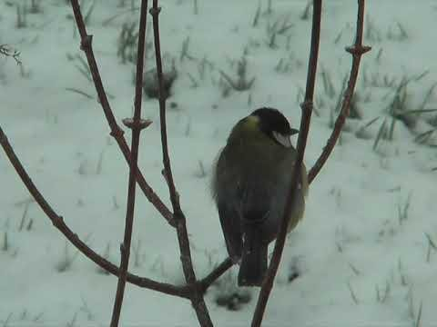

<!doctype html>
<html lang="de">
<head>
<meta charset="utf-8">
<meta name="viewport" content="width=device-width,initial-scale=1,viewport-fit=cover">
<title>Futterhaus-Pass – Vögel am Futterhaus · Bio Mibaso</title>
<meta name="description" content="Vögel am Futterhaus: der richtige Platz, gutes und schlechtes Futter, 21 Futterhausgäste mit Lehrtafeln, ein Film, eine Zählkarte und ein Bilderquiz mit 10 Fragen. Eine Expedition für Klasse 5/6 – mit Futterhaus-Pass, Abzeichen und Urkunde.">
<meta name="theme-color" content="#233D5C">
<link rel="icon" href="../assets/icon.svg">
<link rel="apple-touch-icon" href="../assets/apple-touch-icon.png">
<style>
/* Futterhaus-Pass – Technik wie der Vogelpass, Farben wie Fauna Mibaso */
:root{
  --blau:#233D5C; --blau-tief:#1a2f47; --blau-mittel:#33587c; --blau-hell:#bcd0e2;
  --creme:#F7F3E8; --creme-tief:#EEE7D5; --tile:#FFFFFF;
  --honig:#C28A3A; --honig-tief:#a9762c; --nuss:#8a5a2b;
  --ink:#1c2e42; --ink-soft:#5d6b78; --linie:#d9d2c1;
  --ok:#2f6a45; --bad:#B23B2E;
  --serif:Georgia,"Times New Roman",serif;
  --sans:-apple-system,BlinkMacSystemFont,"Segoe UI",Roboto,Helvetica,Arial,sans-serif;
  color-scheme:light;
}
*{box-sizing:border-box;-webkit-tap-highlight-color:transparent}
[hidden]{display:none!important}
html{background:var(--blau-tief);-webkit-text-size-adjust:100%}
body{margin:0;background:var(--creme);color:var(--ink);font-family:var(--serif);font-size:18px;line-height:1.55;min-height:100vh}
img{max-width:100%}
a{color:var(--blau)}
button{font:inherit;color:inherit}
:focus-visible{outline:3px solid var(--honig);outline-offset:2px}
h1,h2,h3{font-weight:normal;margin:0;text-wrap:balance;line-height:1.2}
p{margin:0}
.huelle{max-width:720px;margin:0 auto;padding-left:max(16px,env(safe-area-inset-left,0px));padding-right:max(16px,env(safe-area-inset-right,0px));padding-bottom:40px}

.app-head{background:linear-gradient(180deg,var(--blau-tief) 0%,var(--blau-mittel) 100%);color:var(--creme);text-align:center;
  padding:calc(env(safe-area-inset-top,0px) + 22px) max(20px,env(safe-area-inset-right,0px)) 24px;border-bottom:4px double var(--blau-hell);position:relative;overflow:hidden}
.app-head .zurueck-kopf{position:absolute;left:12px;top:calc(env(safe-area-inset-top,0px) + 10px);color:#dce8f3;font-family:var(--sans);font-size:14px;text-decoration:none;padding:6px}
.app-head .logo{font-size:44px;line-height:1;margin:14px 0 6px}
.app-head h1{font-size:clamp(28px,8vw,40px);letter-spacing:.02em}
.app-head .untertitel{font-style:italic;color:#dce8f3;margin-top:8px;font-size:clamp(13px,3.6vw,16px)}

.subkopf{position:sticky;top:0;z-index:6;background:var(--creme);border-bottom:1px solid var(--linie);
  padding:calc(env(safe-area-inset-top,0px) + 8px) max(16px,env(safe-area-inset-right,0px)) 8px max(16px,env(safe-area-inset-left,0px))}
.subkopf .row{max-width:720px;margin:0 auto;display:flex;align-items:center;justify-content:space-between;gap:10px}
.zurueck{font-family:var(--sans);font-size:15px;text-decoration:none;color:var(--blau);padding:6px 4px}
.tchip{font-family:var(--sans);font-size:14px;background:var(--tile);border:1px solid var(--linie);border-radius:999px;padding:5px 12px;color:var(--blau);font-variant-numeric:tabular-nums;white-space:nowrap}

section{padding-top:26px;display:grid;gap:14px}
h2{font-size:25px}
h2::after{content:"";display:block;width:46px;height:3px;margin-top:8px;background:currentColor;border-radius:2px}
.h-blau{color:var(--blau)} .h-honig{color:var(--honig-tief)}
h3{font-size:19px;color:var(--blau)}
.eyebrow{font-family:var(--sans);font-size:12px;letter-spacing:.12em;text-transform:uppercase;color:var(--ink-soft)}
.lead{font-size:19px}
.prose{display:grid;gap:12px}
.klein{font-size:15px;color:var(--ink-soft)}
ul.clean{margin:0;padding-left:1.2em;display:grid;gap:4px}

.kacheln{display:grid;gap:12px}
.kachel{display:grid;grid-template-columns:auto 1fr auto;gap:14px;align-items:center;background:var(--tile);border:1px solid var(--linie);
  border-radius:14px;padding:14px 16px;text-decoration:none;color:var(--ink);box-shadow:0 1px 4px rgba(35,61,92,.07);transition:transform .08s,box-shadow .08s}
a.kachel:hover{transform:translateY(-2px);box-shadow:0 4px 14px rgba(35,61,92,.14)}
.kachel .ke{font-size:30px;width:44px;height:44px;display:grid;place-items:center;border-radius:12px;background:var(--creme-tief)}
.kachel .kt{font-size:18px;color:var(--blau);display:block;font-weight:bold}
.kachel .kb{font-size:14px;color:var(--ink-soft);font-family:var(--sans)}
.kachel .pf{font-size:24px;color:var(--blau-mittel)}
.ablauf{display:grid;grid-template-columns:auto 1fr;gap:6px 12px;font-family:var(--sans);font-size:15px;background:var(--tile);border:1px solid var(--linie);border-radius:14px;padding:14px 16px}
.ablauf b{color:var(--blau)}

.schalter{display:flex;flex-wrap:wrap;gap:6px;align-items:center;font-family:var(--sans);font-size:14px}
.schalter .lab{color:var(--ink-soft);margin-right:4px}
.sbtn{border:1px solid var(--linie);background:var(--tile);border-radius:999px;padding:7px 13px;cursor:pointer;color:var(--ink-soft)}
.sbtn.an{background:var(--blau);border-color:var(--blau);color:#fff}
.hint{font-family:var(--sans);font-size:13px;color:var(--ink-soft)}

/* Pass-Bühne mit Vorratshöhle */
.buehne{position:relative;background:linear-gradient(180deg,#f4efe4 0%,#fff 60%,var(--creme-tief) 100%);border:1px solid var(--linie);border-radius:16px;padding:68px 12px 10px;display:grid;place-items:center;overflow:hidden}
.buehne svg{width:min(240px,62vw);height:auto;display:block}
.buehne .boden{position:absolute;left:0;right:0;bottom:0;height:16px;background:repeating-linear-gradient(90deg,#efe6d3 0 38px,#e2d6bd 38px 40px);border-top:1px solid var(--linie)}
.rangchip{position:absolute;left:12px;top:12px;display:flex;gap:8px;align-items:center;background:var(--tile);border:1px solid var(--linie);border-radius:12px;padding:6px 10px;font-family:var(--sans);font-size:12px;color:var(--ink-soft);z-index:2}
.rangchip .med{font-size:24px}
.rangchip b{display:block;font-size:14px;color:var(--blau)}
.zaehler{position:absolute;right:12px;top:12px;background:var(--nuss);color:#fff;border-radius:12px;padding:6px 12px;font-family:var(--sans);font-size:15px;font-variant-numeric:tabular-nums;z-index:2}
.fbalken{height:10px;background:var(--creme-tief);border-radius:5px;overflow:hidden;border:1px solid var(--linie)}
.fbalken i{display:block;height:100%;width:0;background:linear-gradient(90deg,#c9a46a,#a8743b,#8a5a2b);transition:width .8s}
.naechster{text-align:center;font-size:16px;color:var(--ink-soft)}
.kn-neu{animation:pop .5s both}

.stationen{display:grid;gap:10px}
.station{display:grid;grid-template-columns:44px 1fr auto;gap:12px;align-items:center;background:var(--tile);border:1px solid var(--linie);border-radius:14px;padding:12px 14px;text-decoration:none;color:var(--ink)}
.station .nr{width:44px;height:44px;border-radius:50%;display:grid;place-items:center;background:var(--creme-tief);font-size:22px}
.station .st{font-size:17px;color:var(--blau);font-weight:bold;display:block}
.station .sk{font-size:14px;color:var(--ink-soft);font-family:var(--sans)}
.station .stand{font-family:var(--sans);font-size:13px;color:var(--ink-soft);text-align:right;white-space:nowrap}
.station.aktiv{border-color:var(--blau-hell);box-shadow:0 0 0 2px var(--blau-hell)}
.station.fertig .nr{background:#e3f0e7}
.station.gesperrt{opacity:.55}
.knochen{letter-spacing:1px;font-size:16px}
.knochen .leer{opacity:.22;filter:grayscale(1)}

.album{display:grid;grid-template-columns:repeat(auto-fill,minmax(96px,1fr));gap:8px}
.abz{background:var(--tile);border:1px solid var(--linie);border-radius:12px;padding:10px 6px;text-align:center;font-family:var(--sans);font-size:12px;color:var(--ink-soft);display:grid;gap:4px;justify-items:center}
.abz .em{font-size:28px}
.abz.zu .em{filter:grayscale(1);opacity:.25}
.abz.auf{border-color:var(--honig);color:var(--ink)}

/* Bausteine */
.merke{border:1.5px dashed var(--blau-mittel);border-radius:12px;padding:14px 16px;display:grid;gap:8px;background:#f8fbfd}
.merke .eyebrow{color:var(--blau)}
.achtung{border-left:5px solid var(--honig);background:#fbf1e2;padding:12px 14px;border-radius:0 12px 12px 0;font-size:16px}
.achtung b{color:#8a5a17}
.box{background:var(--tile);border:1px solid var(--linie);border-radius:14px;padding:16px;display:grid;gap:12px}
.box > .eyebrow{color:var(--blau)}
details{background:var(--creme-tief);border-radius:10px;padding:10px 14px}
details summary{cursor:pointer;color:var(--blau);font-family:var(--sans);font-size:15px}
details[open] summary{margin-bottom:8px}
details .grid{display:grid;gap:8px}

figure.bild{margin:0;background:var(--tile);border:1px solid var(--linie);border-radius:14px;overflow:hidden}
figure.bild .rahmen-bild{aspect-ratio:16/10;background:linear-gradient(160deg,#e9f0f6,#d6e2ec);position:relative}
figure.bild img{display:block;width:100%;height:100%;object-fit:cover}
figure.bild .platzhalter{position:absolute;inset:0;display:none;place-items:center;align-content:center;gap:6px;text-align:center;color:var(--ink-soft);font-family:var(--sans);font-size:13px}
figure.bild .platzhalter.zeigen{display:grid}
figure.bild .platzhalter span{font-size:64px;line-height:1}
figure.bild figcaption{padding:12px 14px;font-size:16px}
figure.bild figcaption b{color:var(--blau)}

.knopf{display:inline-block;border:1px solid var(--blau);background:var(--tile);color:var(--blau);border-radius:12px;padding:10px 16px;font-family:var(--sans);font-size:15px;cursor:pointer;text-decoration:none;text-align:center}
.knopf.prim{background:var(--blau);color:#fff;box-shadow:0 2px 0 var(--blau-tief)}
.knopf.prim:hover{background:var(--blau-tief)}
.knopf.honig{background:var(--honig);border-color:var(--honig);color:#fff;box-shadow:0 2px 0 #8a5a17}
.knopf:disabled{opacity:.4;cursor:default}
.knopfreihe{display:flex;flex-wrap:wrap;gap:8px;justify-content:center}

/* Sortieren */
.chips{display:flex;flex-wrap:wrap;gap:8px}
.chip{border:1px solid var(--linie);background:var(--creme);border-radius:999px;padding:6px 13px;cursor:pointer;font-size:16px;font-family:var(--serif)}
.chip.sel{border-color:var(--blau);box-shadow:0 0 0 2px var(--blau) inset;background:#fff}
.chip.ok{border-color:var(--ok);color:var(--ok);cursor:default;background:#fff}
.shake{animation:shake .35s}
@keyframes shake{25%{transform:translateX(-5px)}75%{transform:translateX(5px)}}
.bins{display:grid;grid-template-columns:1fr 1fr;gap:10px}
.bins.drei{grid-template-columns:repeat(3,1fr)}
.bin{border:2px dashed var(--linie);border-radius:12px;padding:10px;min-height:110px;display:flex;flex-direction:column;gap:8px;cursor:pointer;background:var(--creme)}
.bin h4{margin:0;font-weight:normal;font-size:16px;color:var(--blau)}
.feedback{min-height:1.5em;font-size:16px;color:var(--ink-soft)}
.feedback.good{color:var(--ok)} .feedback.bad{color:var(--bad)}

/* Karten */
.karten{display:grid;grid-template-columns:repeat(auto-fill,minmax(190px,1fr));gap:10px}
.karte{min-height:120px;border:1px solid var(--linie);border-radius:14px;background:var(--tile);padding:14px;text-align:left;cursor:pointer;display:grid;gap:6px;align-content:start}
.karte .kk{font-size:18px;color:var(--blau)}
.karte .kr{font-size:15px;color:var(--ink-soft)}
.karte.offen{background:#eef4f9;border-color:var(--blau-hell)}
.karte .tipp{font-family:var(--sans);font-size:12px;color:var(--blau-mittel)}

/* Animationen / Widgets */
.anim svg{width:100%;height:auto;display:block;background:#f3f7fa;border-radius:12px;border:1px solid var(--linie)}
.regler{width:100%;accent-color:var(--blau);height:28px}
.anim-text{min-height:4.6em;font-size:16px;background:var(--creme);border-radius:10px;padding:10px 12px}
.anim-text b{color:var(--blau)}
.lbl{font-family:var(--sans);font-size:11px;fill:var(--ink-soft)}
.lbl.b{font-weight:600;fill:var(--ink);font-size:12px}
.lbl.gross{font-size:15px;font-weight:700;fill:var(--ink)}
.tabs{display:flex;gap:6px;flex-wrap:wrap;justify-content:center}
.vgl{display:grid;gap:10px}
.vgl-zeile{display:grid;gap:4px}
.vgl-kopf{display:flex;justify-content:space-between;font-family:var(--sans);font-size:14px;color:var(--ink-soft)}
.vgl-balken{display:grid;grid-template-columns:70px 1fr auto;gap:8px;align-items:center;font-family:var(--sans);font-size:13px}
.vgl-balken .bb{height:14px;background:var(--creme-tief);border-radius:7px;overflow:hidden}
.vgl-balken .bb i{display:block;height:100%;border-radius:7px;transition:width .8s}
.vgl-balken .s i{background:#e3a447} .vgl-balken .w i{background:#6f9cc7}
.vgl-typ{text-align:center;font-size:20px;color:var(--blau)}
.feld{display:grid;grid-template-columns:repeat(4,1fr);gap:8px}
.feld button{aspect-ratio:1;border:1px solid #c9b48f;border-radius:12px;background:linear-gradient(180deg,#f4efe4,#e2d3b5);font-size:30px;cursor:pointer;display:grid;place-items:center}
.feld button:disabled{cursor:default}
.spur-svg{max-width:260px;margin:0 auto}
.answers{display:grid;grid-template-columns:1fr 1fr;gap:8px}
.ans{text-align:left;background:var(--creme);border:1px solid var(--linie);border-radius:12px;padding:11px 13px;cursor:pointer;display:flex;gap:10px;font-size:17px}
.ans b{color:var(--blau-mittel);font-family:var(--sans);font-weight:normal}
.ans.ok{border-color:var(--ok);background:#e3f0e7}
.ans.bad{border-color:var(--bad);background:#f6e1de}
.ans:disabled{cursor:default}
.waerme{transition:opacity .4s}
.federkleid{transition:r .5s}

/* Quiz */
.quiz{display:grid;gap:14px}
.qhead{display:flex;justify-content:space-between;gap:10px;align-items:center;flex-wrap:wrap}
.dots{display:flex;gap:4px;flex-wrap:wrap}
.dots i{width:11px;height:11px;border-radius:50%;background:var(--creme-tief);border:1px solid var(--linie)}
.dots i.ok{background:var(--ok);border-color:var(--ok)} .dots i.bad{background:var(--bad);border-color:var(--bad)} .dots i.now{background:var(--blau);border-color:var(--blau)}
.qq{font-size:20px}
.jokers{display:flex;gap:8px;flex-wrap:wrap}
.publikum{font-style:italic;color:var(--ink-soft);border-left:3px solid var(--honig);padding-left:12px}
.ergebnis{text-align:center;display:grid;gap:10px;justify-items:center}
.ergebnis .gross{font-size:40px;letter-spacing:4px}

/* Feier, Toast, Konfetti, Urkunde */
.overlay{position:fixed;inset:0;z-index:50;background:rgba(20,32,45,.6);display:grid;place-items:center;
  padding:calc(env(safe-area-inset-top,0px) + 16px) 16px calc(env(safe-area-inset-bottom,0px) + 16px);overflow-y:auto}
.feierkarte{background:var(--tile);border-radius:18px;padding:24px 20px;max-width:420px;width:100%;text-align:center;display:grid;gap:10px;box-shadow:0 10px 40px rgba(0,0,0,.25)}
.feierkarte .fmed{font-size:64px;animation:pop .6s both}
@keyframes pop{from{transform:scale(.3);opacity:0}to{transform:none;opacity:1}}
.toast{position:fixed;left:50%;bottom:calc(env(safe-area-inset-bottom,0px) + 18px);transform:translateX(-50%) translateY(120px);background:var(--ink);color:#fff;border-radius:999px;padding:10px 18px;font-family:var(--sans);font-size:15px;z-index:60;transition:transform .3s;max-width:90vw;text-align:center}
.toast.zeigen{transform:translateX(-50%) translateY(0)}
.konffeld{position:fixed;inset:0;pointer-events:none;z-index:70;overflow:hidden}
.konf{position:absolute;top:-16px;font-size:18px;animation:fall 3.6s linear forwards}
@keyframes fall{to{transform:translateY(110vh) rotate(540deg)}}
.urkunde{background:#fffdf7;max-width:640px;width:100%;border-radius:6px;padding:14px;box-shadow:0 10px 40px rgba(0,0,0,.3)}
.rahmen{border:3px double var(--blau);outline:1px solid var(--honig);outline-offset:-10px;padding:26px 22px;text-align:center;display:grid;gap:8px;justify-items:center}
.urk-eyebrow{font-family:var(--sans);font-size:12px;letter-spacing:.14em;text-transform:uppercase;color:var(--ink-soft)}
.urk-med{font-size:56px}
.urk-titel{font-size:44px;color:var(--blau);letter-spacing:.06em}
.urk-sub{font-size:18px;color:var(--honig-tief)}
.urk-satz{font-size:17px}
.urk-name{font:inherit;font-size:26px;text-align:center;border:0;border-bottom:1.5px solid var(--ink-soft);background:transparent;width:min(100%,380px);padding:4px;color:var(--ink)}
.urk-name-druck{display:none;font-size:26px;border-bottom:1.5px solid var(--ink-soft);min-width:300px;padding:4px}
.urk-tab{width:100%;max-width:440px;border-collapse:collapse;font-size:15px;margin-top:6px}
.urk-tab td{padding:4px 6px;border-bottom:1px solid var(--linie);text-align:left}
.urk-tab td:last-child{text-align:right;white-space:nowrap}
.urk-summe{font-size:17px;color:var(--blau)}
.urk-album{font-size:24px;letter-spacing:4px}
.urk-fuss{display:flex;justify-content:space-between;width:100%;font-family:var(--sans);font-size:13px;color:var(--ink-soft);margin-top:12px;gap:10px;flex-wrap:wrap}
.urk-btns{display:flex;gap:8px;justify-content:center;flex-wrap:wrap;margin-top:12px}
.lehrer{background:var(--tile);border:1px solid var(--linie);border-radius:14px}
.lehrer summary{font-size:16px}
.reset{display:grid;gap:8px;justify-items:center;text-align:center}
footer.fuss{border-top:1px solid var(--linie);margin-top:34px;padding-top:18px;text-align:center;font-family:var(--sans);font-size:13px;color:var(--ink-soft);display:grid;gap:6px}

@media (max-width:480px){.answers{grid-template-columns:1fr} body{font-size:17px} .bins,.bins.drei{grid-template-columns:1fr}}
@media (prefers-reduced-motion:reduce){*{animation:none!important;transition:none!important}}
@media print{
  @page{size:A4 portrait;margin:12mm}
  html,body{background:#fff}
  body *{visibility:hidden}
  #urkunde,#urkunde *{visibility:visible}
  #urkunde{position:absolute;inset:0;background:#fff;display:block;padding:0}
  .urkunde{box-shadow:none;max-width:none}
  .urk-btns,.urk-name{display:none!important}
  .urk-name-druck{display:block}
}

.kn-neu{transform-box:fill-box;transform-origin:center}
.reihe{display:grid;gap:12px}
.reihe-nav{display:flex;align-items:center;justify-content:space-between;gap:10px}
.reihe-punkte{display:flex;gap:6px}
.reihe-punkte i{width:10px;height:10px;border-radius:50%;background:var(--creme-tief);border:1px solid var(--linie)}
.reihe-punkte i.an{background:var(--blau);border-color:var(--blau)}
.reihe-zeit{font-family:var(--sans);font-size:13px;letter-spacing:.08em;text-transform:uppercase;color:var(--honig-tief)}
.ordnen{display:grid;gap:8px}
.ordnen ol{margin:0;padding-left:1.4em;display:grid;gap:6px;min-height:1.5em}
.ordnen ol li{color:var(--ok)}
.zucht{display:grid;gap:10px}
.welpen{display:grid;grid-template-columns:repeat(4,1fr);gap:8px;align-items:end}
.welpe{border:1px solid var(--linie);border-radius:12px;background:var(--creme);cursor:pointer;display:grid;justify-items:center;gap:2px;padding:8px 2px;font-family:var(--sans);font-size:12px;color:var(--ink-soft)}
.welpe span{line-height:1}
.welpe:disabled{cursor:default;opacity:.55}
.welpe.gewaehlt{border-color:var(--ok);background:#e3f0e7;opacity:1}
.zucht-leiste{display:flex;gap:4px;align-items:flex-end;height:70px;padding:6px;background:var(--creme);border-radius:10px}
.zucht-leiste div{flex:1;background:var(--blau-mittel);border-radius:4px 4px 0 0;display:grid;place-items:start center;color:#fff;font-family:var(--sans);font-size:10px;padding-top:2px;transition:height .6s}
.eier{display:grid;grid-template-columns:repeat(4,1fr);gap:8px}
.ei{border:1px solid var(--linie);border-radius:50% 50% 46% 46% / 58% 58% 42% 42%;background:linear-gradient(160deg,#fff8ec,#ead9bd);aspect-ratio:3/4;cursor:pointer;display:grid;place-items:center;font-family:var(--sans);font-size:11px;color:#7a1f15;padding:4px;text-align:center}
.ei.an{box-shadow:0 0 0 3px var(--honig)}
.fd-views{display:grid;grid-template-columns:minmax(0,.85fr) minmax(0,1.15fr);gap:16px;align-items:start}
.anim svg.fd-draw{width:100%;height:290px;display:block;background:#f3f7fa;border:1px solid var(--linie);border-radius:12px}
.fd-cap{text-align:center;font-family:var(--sans);font-size:13px;color:var(--ink-soft);margin-top:6px}
.fd-leg{display:flex;flex-wrap:wrap;gap:6px 16px;justify-content:center;font-family:var(--sans);font-size:13px;color:var(--ink-soft)}
.fd-sw{display:inline-block;width:20px;height:3px;background:#b08a55;vertical-align:middle;margin-right:6px}
.fd-sw.fein{height:2px;background:var(--ink)}
@media(max-width:520px){.fd-views{grid-template-columns:1fr;gap:10px}.anim svg.fd-over{height:230px}}
.anim svg.gr-szene{width:100%;height:420px;display:block}
.gr-leg{display:flex;gap:18px;flex-wrap:wrap;justify-content:center;font-family:var(--sans);font-size:13px;color:var(--ink-soft)}
.gr-leg span::before{content:"";display:inline-block;width:22px;height:3px;vertical-align:middle;margin-right:6px;background:#7d8a96}
.gr-leg .sehne::before{background:#c0392b}
.gr-kopf{display:flex;justify-content:space-between;gap:12px;font-family:var(--sans);font-size:13px;color:var(--ink-soft)}
.gr-kopf output{color:var(--blau);font-weight:600}
.sb-bild .rahmen-bild{aspect-ratio:480/407;background:#fff}
.sb-bild img{object-fit:contain}
.galerie{display:grid;grid-template-columns:repeat(auto-fill,minmax(150px,1fr));gap:10px}
.galerie figure.bild .rahmen-bild{aspect-ratio:4/3}
.galerie figure.bild figcaption{font-size:15px}
.kn-svg svg,.anim .kn-svg svg{width:100%;height:auto;display:block}
.sk-opt{display:grid;gap:8px}
.sk-ende{display:grid;grid-template-columns:minmax(120px,200px) 1fr;gap:14px;align-items:start}
.sk-ende img{width:100%;border-radius:8px;border:1px solid var(--linie);box-shadow:0 2px 8px rgba(35,61,92,.12)}
.sk-ende > div{display:grid;gap:8px;justify-items:start}
@media (max-width:480px){.sk-ende{grid-template-columns:1fr}.sk-ende img{max-width:260px}}

/* Futterhaus-Pass */
.tabs.links{justify-content:flex-start}
.garten{position:relative;border-radius:12px;overflow:hidden;border:1px solid var(--linie)}
.garten svg{display:block;width:100%;height:auto}
.pmark{position:absolute;transform:translate(-50%,-50%);width:38px;height:38px;border-radius:50%;border:2px solid #fff;background:var(--blau);color:#fff;font-family:var(--sans);font-size:17px;font-weight:700;cursor:pointer;box-shadow:0 2px 8px rgba(0,0,0,.3)}
.pmark.p-ja{background:var(--ok)} .pmark.p-nein{background:var(--bad)} .pmark.p-geht{background:var(--honig)}
.pmark.an{outline:3px solid var(--honig);outline-offset:2px}
.gaeste{display:grid;grid-template-columns:repeat(auto-fill,minmax(200px,1fr));gap:10px}
.gast{display:grid;align-content:start;gap:4px;text-align:left;background:var(--tile);border:1px solid var(--linie);border-radius:14px;padding:0 0 12px;overflow:hidden;cursor:pointer;font-family:var(--serif)}
.gast:hover{box-shadow:0 4px 14px rgba(35,61,92,.14)}
.gbild{position:relative;display:block;aspect-ratio:12/5;background:#e9f0f6}
.gbild img{display:block;width:100%;height:100%;object-fit:cover}
.gname{font-size:18px;font-weight:bold;color:var(--blau);padding:6px 12px 0}
.gtext{font-size:14px;line-height:1.45;color:var(--ink-soft);font-family:var(--sans);padding:0 12px}
.marke{position:absolute;right:8px;top:8px;background:var(--blau);color:#fff;font-family:var(--sans);font-size:11px;letter-spacing:.04em;border-radius:999px;padding:3px 9px}
.marke.inline{position:static;vertical-align:middle;margin-left:6px}
.tafelkarte{background:var(--tile);border-radius:18px;padding:18px;max-width:560px;width:100%;display:grid;gap:10px;box-shadow:0 10px 40px rgba(0,0,0,.25)}
.tk-kopf{display:flex;justify-content:space-between;align-items:center;gap:10px}
.tk-kopf .knopf{padding:6px 12px}
.tk-bild{background:var(--creme);border-radius:10px;overflow:hidden;border:1px solid var(--linie)}
.tk-bild img{display:block;width:100%;height:auto;max-height:70vh;object-fit:contain}
.video{position:relative;aspect-ratio:4/3;border-radius:12px;overflow:hidden;background:#000}
.video iframe{position:absolute;inset:0;width:100%;height:100%;border:0}
.vstart{position:absolute;inset:0;border:0;padding:0;cursor:pointer;background:#000}
.vstart img{width:100%;height:100%;object-fit:cover;display:block;opacity:.92}
.vplay{position:absolute;left:50%;top:50%;width:76px;transform:translate(-50%,-50%);filter:drop-shadow(0 2px 6px rgba(0,0,0,.4))}
.vstart:hover .vplay path:first-child{fill:#e00}
.zkarte{display:grid;gap:6px}
.zreihe{display:grid;grid-template-columns:72px 1fr 40px 34px 40px;gap:8px;align-items:center;background:var(--creme);border-radius:10px;padding:5px 8px}
.zreihe img{width:72px;height:30px;object-fit:cover;border-radius:6px}
.zname{font-size:16px}
.zreihe output{text-align:center;font-family:var(--sans);font-size:18px;color:var(--blau);font-variant-numeric:tabular-nums}
.zbtn{width:40px;height:40px;border-radius:50%;border:1px solid var(--blau);background:var(--tile);color:var(--blau);font-size:22px;line-height:1;cursor:pointer}
.zsumme{text-align:center;font-family:var(--sans);font-size:15px;color:var(--ink-soft)}
.bq-grid{display:grid;grid-template-columns:1fr 1fr;gap:10px}
.bq{position:relative;border:2px solid var(--linie);border-radius:12px;padding:0;overflow:hidden;background:var(--tile);cursor:pointer;display:grid;text-align:left}
.bq img{display:block;width:100%;aspect-ratio:12/5;object-fit:cover}
.bq-buch{position:absolute;left:8px;top:8px;width:28px;height:28px;border-radius:50%;background:rgba(255,255,255,.92);color:var(--blau);font-family:var(--sans);font-size:15px;font-weight:700;display:grid;place-items:center;box-shadow:0 1px 4px rgba(0,0,0,.25)}
.bq-name{font-size:16px;padding:6px 10px;color:var(--blau);font-weight:bold}
.bq-poll{display:grid;grid-template-columns:1fr auto;gap:8px;align-items:center;padding:6px 10px;font-family:var(--sans);font-size:13px;color:var(--ink-soft)}
.bq-poll i{display:block;height:10px;width:0;background:var(--honig);border-radius:5px;transition:width .8s}
.bq-poll em{font-style:normal}
.bq.ok{border-color:var(--ok);box-shadow:0 0 0 2px var(--ok)}
.bq.bad{border-color:var(--bad);box-shadow:0 0 0 2px var(--bad)}
.bq:disabled{cursor:default}
.bq:disabled:not(.ok):not(.bad) img{opacity:.6}
@media (max-width:520px){.bq-grid{grid-template-columns:1fr}.zreihe{grid-template-columns:56px 1fr 40px 30px 40px}.zreihe img{width:56px}}

</style>
</head>
<body>
<div id="app"></div>
<div class="toast" id="toast" role="status" aria-live="polite"></div>

<script>
"use strict";
/* ============ Helfer ============ */
const $ = (s, el = document) => el.querySelector(s);
const $$ = (s, el = document) => [...el.querySelectorAll(s)];
const shuffle = a => { a = a.slice(); for (let i = a.length - 1; i > 0; i--) { const j = Math.floor(Math.random() * (i + 1)); [a[i], a[j]] = [a[j], a[i]]; } return a; };
const reduce = window.matchMedia && matchMedia("(prefers-reduced-motion: reduce)").matches;
const IM_RAHMEN = (() => { try { return window.self !== window.top; } catch (e) { return true; } })();
const esc = t => String(t).replace(/&/g, "&amp;").replace(/</g, "&lt;").replace(/"/g, "&quot;");

/* ============ Speicher (nur auf diesem Gerät) ============ */
const KEY = "mibaso.fauna.futterhauspass";
function laden() { try { return JSON.parse(localStorage.getItem(KEY) || "{}"); } catch (e) { return {}; } }
let S = Object.assign({ modus: "level", name: "" }, laden());
function speichern() { try { localStorage.setItem(KEY, JSON.stringify(S)); } catch (e) {} }

/* ============ Bausteine ============ */
function knochenHTML(n) { let s = ""; for (let k = 0; k < 3; k++) s += k < n ? "🌻" : '<span class="leer">🌻</span>'; return `<span class="knochen" aria-label="${n} von 3 Kernen">${s}</span>`; }
const federn = n => n === 1 ? "1 Kern" : n + " Kerne";
function bild(datei, emoji, titel, text, ordner = "voegel") {
  return `<figure class="bild"><div class="rahmen-bild">
    <div class="platzhalter"><span>${emoji}</span>Bild folgt</div>
    
  </div>${text ? `<figcaption>${text}</figcaption>` : ""}</figure>`;
}

/* ============ Toast, Konfetti, Fanfare ============ */
let toastTimer;
function toast(t) { const el = $("#toast"); el.textContent = t; el.classList.add("zeigen"); clearTimeout(toastTimer); toastTimer = setTimeout(() => el.classList.remove("zeigen"), 3200); }
function konfetti() {
  if (reduce) return;
  const f = document.createElement("div"); f.className = "konffeld";
  const zeichen = ["🌻", "🐦", "⭐", "🥜", "🌻", "✨"];
  for (let n = 0; n < 50; n++) {
    const k = document.createElement("span"); k.className = "konf"; k.textContent = zeichen[n % zeichen.length];
    k.style.cssText = `left:${Math.random() * 100}%;animation-delay:${(Math.random() * .8).toFixed(2)}s`;
    f.appendChild(k);
  }
  document.body.appendChild(f); setTimeout(() => f.remove(), 4800);
}
function fanfare(gross) {
  try {
    const Ctx = window.AudioContext || window.webkitAudioContext; if (!Ctx) return;
    const ctx = new Ctx(); if (ctx.state === "suspended") ctx.resume();
    const t0 = ctx.currentTime + .05;
    const noten = gross
      ? [[392, 0, .14], [523.25, .14, .14], [659.25, .28, .14], [783.99, .42, .28], [659.25, .72, .14], [783.99, .86, .9]]
      : [[523.25, 0, .16], [659.25, .15, .16], [783.99, .30, .16], [1046.5, .46, .6]];
    noten.forEach(([fr, st, du]) => {
      [1, 2].forEach(oct => {
        const o = ctx.createOscillator(), g = ctx.createGain();
        o.type = oct === 1 ? "triangle" : "sine"; o.frequency.value = fr * oct;
        const v = oct === 1 ? .2 : .05;
        g.gain.setValueAtTime(0, t0 + st); g.gain.linearRampToValueAtTime(v, t0 + st + .02);
        g.gain.exponentialRampToValueAtTime(.001, t0 + st + du + .25);
        o.connect(g); g.connect(ctx.destination); o.start(t0 + st); o.stop(t0 + st + du + .3);
      });
    });
    setTimeout(() => ctx.close(), 3000);
  } catch (e) {}
}
/* ============ Futterhaus mit Sonnenblumenkernen ============ */
function futterhausSVG(summe, max, neu) {
  const anz = Math.round(summe / max * 26);
  const kerne = [];
  for (let i = 0; i < anz; i++) {
    const reihe = Math.floor(i / 9), k = i % 9;
    const x = 66 + k * 8.5 + (reihe % 2 ? 4 : 0), y = 117 - reihe * 4.2;
    kerne.push(`<ellipse class="${neu && i === anz - 1 ? "kn-neu" : ""}" cx="${x}" cy="${y}" rx="3.6" ry="2.2" fill="${i % 3 ? "#2f2a26" : "#55493d"}" stroke="#d9cdb6" stroke-width=".6" transform="rotate(${(i * 37) % 60 - 30} ${x} ${y})"/>`);
  }
  // kleine Gäste kommen dazu, je mehr Kerne im Futterhaus liegen
  const vogel = (x, y, s, bauch, kopf, wange, flip) => `<g transform="translate(${x} ${y}) scale(${flip ? -s : s} ${s})">
      <path d="M-14 2 L-24 6 L-22 0 Z" fill="${kopf}"/>
      <ellipse cx="-2" cy="0" rx="13" ry="9" fill="${bauch}"/>
      <path d="M-12 -3 Q-2 -9 8 -4 Q0 2 -12 -3Z" fill="${kopf}" opacity=".55"/>
      <circle cx="9" cy="-7" r="6.5" fill="${kopf}"/>
      ${wange ? `<circle cx="10" cy="-6" r="3.3" fill="${wange}"/>` : ""}
      <circle cx="11.5" cy="-8.5" r="1.3" fill="#111"/>
      <path d="M15 -7.5 L20 -6.5 L15 -5.2Z" fill="#3a3a3a"/>
      <path d="M-3 8 L-4 13 M2 8 L2 13" stroke="#6b5a45" stroke-width="1.2"/></g>`;
  const gaeste = [
    summe >= 1 ? vogel(62, 104, .9, "#f2d34f", "#1d1d1d", "#fff", false) : "",
    summe >= 5 ? vogel(138, 104, .8, "#f0dc6a", "#3d7ac2", "#fff", true) : "",
    summe >= 9 ? vogel(150, 176, .95, "#e8833a", "#8a7560", "", true) : "",
    summe >= 13 ? vogel(48, 176, .95, "#e4593f", "#1d1d1d", "", false) : ""
  ].join("");
  return `<svg viewBox="0 0 200 200" role="img" aria-label="Futterhaus mit ${summe} von ${max} Sonnenblumenkernen">
    <rect x="96" y="128" width="8" height="62" fill="#8a5a2b"/>
    <ellipse cx="100" cy="190" rx="60" ry="6" fill="#e9e1cf"/>
    <rect x="52" y="120" width="96" height="10" rx="2" fill="#a8743b" stroke="#6b4a2b" stroke-width="1.5"/>
    <rect x="56" y="74" width="7" height="48" fill="#a8743b"/><rect x="137" y="74" width="7" height="48" fill="#a8743b"/>
    ${kerne.join("")}
    <path d="M38 78 L100 34 L162 78 Z" fill="#b23b2e" stroke="#7a2a20" stroke-width="2" stroke-linejoin="round"/>
    <path d="M44 76 L100 38 L156 76" fill="none" stroke="#fff" stroke-width="3" opacity=".75"/>
    ${gaeste}
  </svg>`;
}

/* ============ Daten ============ */
// Gäste: [slug, Name, Gruppe, Text, Foto vorhanden?, Marke]
const GAESTE = [
  ["kohlmeise", "Kohlmeise", "meise", "Der Chef unter den Meisen: schwarzer „Schlips“ auf dem gelben Bauch. Beim Männchen ist er breiter.", false],
  ["blaumeise", "Blaumeise", "meise", "Klein, frech und gern kopfüber: Am Meisenknödel turnt sie wie im Zirkus.", true],
  ["tannenmeise", "Tannenmeise", "meise", "Die kleinste Meise – ohne Gelb, mit weißem Fleck im Nacken. Versteckt Kerne als Vorrat.", false],
  ["sumpfmeise", "Sumpfmeise", "meise", "Lebt trotz ihres Namens nicht im Sumpf, sondern im Laubwald und im Garten. Glänzend schwarze Kappe, kleiner Kinnfleck.", false],
  ["kleiber", "Kleiber", "meise", "Läuft als einziger Vogel bei uns kopfüber den Stamm hinab. Klemmt Nüsse in Rindenritzen und hackt sie auf.", false],
  ["buntspecht", "Buntspecht", "meise", "Klemmt Nüsse und Zapfen in eine Spalte – seine „Spechtschmiede“ – und hämmert sie dort auf. Rot unter dem Schwanz.", true],
  ["buchfink", "Buchfink", "korn", "Der Mann trägt eine rostrote Brust und einen blaugrauen Kopf. Pickt gern am Boden auf, was andere fallen lassen.", false],
  ["bergfink", "Bergfink", "korn", "Wintergast aus dem hohen Norden: kommt im Oktober, fliegt im April wieder ab. Manchmal in riesigen Schwärmen.", false, "Wintergast"],
  ["gruenfink", "Grünfink", "korn", "Olivgrün mit gelben Streifen an Flügel und Schwanz. Knackt Sonnenblumenkerne mit seinem kräftigen hellen Schnabel.", false],
  ["gimpel", "Gimpel", "korn", "Auch Dompfaff genannt. Der Mann hat eine leuchtend rote Brust, das Weibchen eine graubraune – die schwarze Kappe tragen beide.", false],
  ["kernbeisser", "Kernbeißer", "korn", "Der Nussknacker unter den Vögeln: Sein riesiger Schnabel knackt sogar Kirschkerne. Am Futterhaus ist er oft der Boss.", false],
  ["stieglitz", "Stieglitz", "korn", "Auch Distelfink genannt: rote Gesichtsmaske, gelbe Flügelbinde. Zieht mit dem spitzen Schnabel Samen aus Distelköpfen.", false],
  ["erlenzeisig", "Erlenzeisig", "korn", "Klein, gelbgrün und gestrichelt. Im Winter kommen viele aus dem Norden zu uns und hängen kopfüber in Erlen und Birken.", false, "im Winter häufiger"],
  ["haussperling", "Haussperling", "korn", "Der Spatz. Der Mann hat einen grauen Scheitel und einen schwarzen Latz. Spatzen kommen fast immer in Gruppen – und schimpfen viel.", false],
  ["feldsperling", "Feldsperling", "korn", "Der kleine Vetter des Haussperlings: brauner Scheitel und schwarzer Fleck auf der weißen Wange. Männchen und Weibchen sehen gleich aus.", true],
  ["amsel", "Amsel", "boden", "Frisst am liebsten am Boden: Äpfel, Rosinen, Haferflocken. Das Männchen ist schwarz mit gelbem Schnabel, das Weibchen braun.", true],
  ["rotkehlchen", "Rotkehlchen", "boden", "Sieht niedlich aus, ist aber ein kleiner Raufbold: Auch im Winter verteidigt es sein Revier gegen andere Rotkehlchen.", true],
  ["heckenbraunelle", "Heckenbraunelle", "boden", "Huscht wie eine Maus unter dem Futterhaus herum. Sieht aus wie ein Spatz, hat aber einen dünnen, spitzen Schnabel und einen grauen Kopf.", false],
  ["eichelhaeher", "Eichelhäher", "gross", "Versteckt im Herbst Tausende Eicheln als Vorrat. Was er nicht wiederfindet, wird zur jungen Eiche – ein Förster mit Flügeln.", true],
  ["ringeltaube", "Ringeltaube", "gross", "Unsere größte Taube, mit weißem Fleck am Hals. Sammelt am Boden auf, was die anderen fallen lassen.", false],
  ["sperber", "Sperber", "gross", "Kommt nicht wegen der Körner, sondern wegen der Vögel. Sind plötzlich alle verschwunden, ist er oft nicht weit.", false, "Jäger"]
];
const GRUPPEN = [["alle", "Alle"], ["meise", "Meisen & Kletterer"], ["korn", "Körnerfresser"], ["boden", "Bodengäste"], ["gross", "Große Gäste & ein Jäger"]];
const GAST = Object.fromEntries(GAESTE.map(g => [g[0], g]));

const SORT_SETS = {
  regeln: { bins: [["gut", "👍 Gute Idee"], ["schlecht", "👎 Lieber nicht"]], items: [
    ["Ein Futtersilo statt eines offenen Häuschens", "gut", "Im Silo laufen die Vögel nicht im Futter herum und koten nicht hinein. So verbreiten sich Krankheiten viel seltener."],
    ["Ein Dach über dem Futter", "gut", "Nasses Futter verdirbt und schimmelt. Ein Dach hält Regen und Schnee ab."],
    ["Jeden Tag nur so viel nachfüllen, wie gefressen wird", "gut", "Dann bleibt nichts liegen, was feucht werden oder schimmeln kann."],
    ["Das Futterhaus ab und zu mit heißem Wasser reinigen", "gut", "Heißes Wasser genügt – ohne Putzmittel. Danach gut trocknen lassen."],
    ["Im Winter eine flache Schale mit frischem Wasser", "gut", "Bei Frost finden Vögel kaum offenes Wasser zum Trinken und Baden. Das Wasser täglich wechseln."],
    ["Meisenknödel im Plastiknetz aufhängen", "schlecht", "In den Maschen können sich Vögel mit den Füßen verfangen. Besser Knödel ohne Netz in einem Halter."],
    ["Das Futterhaus direkt in die dichte Hecke stellen", "schlecht", "Dort kann sich die Katze unbemerkt anschleichen."],
    ["Weiterfüttern, obwohl kranke, aufgeplusterte Vögel da sind", "schlecht", "Dann lieber ein paar Wochen Pause machen und alles gründlich reinigen – sonst stecken sich die anderen an."]
  ]},
  futter: { bins: [["ja", "✅ Ab ins Futterhaus"], ["nein", "🚫 Bitte nicht"]], items: [
    ["Sonnenblumenkerne", "ja", "Das Lieblingsfutter von Meisen und Finken – viel Fett, viel Energie."],
    ["Haferflocken", "ja", "Bei Amsel, Rotkehlchen und Heckenbraunelle sehr beliebt – am besten am Boden anbieten."],
    ["Apfelstücke", "ja", "Amseln und Drosseln lieben Obst, auch angefaulte Äpfel."],
    ["Ungesalzene Erdnüsse", "ja", "Meisen, Kleiber und Spechte holen sie gern – gehackt oder im Spender."],
    ["Fettfutter ohne Netz", "ja", "Fett liefert viel Energie für kalte Nächte."],
    ["Brot", "nein", "Brot quillt im Magen auf und schimmelt schnell. Es macht satt, liefert aber kaum das, was Vögel brauchen."],
    ["Gesalzener Speck", "nein", "Salz schadet Vögeln – auch in Wurst, Käse und Chips."],
    ["Kekse und Kuchen", "nein", "Zu viel Zucker. Für Vögel ist das Fast Food."],
    ["Reste vom Mittagessen", "nein", "Gewürzt, gesalzen und schnell verdorben – und Ratten freuen sich auch."]
  ]},
  wer: { bins: [["korn", "🌻 Körner und Kerne"], ["weich", "🍎 Weiches Futter am Boden"], ["fett", "🥜 Fett und Nüsse"]], items: [
    ["Buchfink", "korn", "Finken haben einen kräftigen Kegelschnabel – ein Körnerknacker."],
    ["Gimpel", "korn", "Der Gimpel frisst Samen und Knospen."],
    ["Kernbeißer", "korn", "Sein riesiger Schnabel knackt sogar Kirschkerne."],
    ["Haussperling", "korn", "Spatzen sind Körnerfresser – Hirse und Weizen mögen sie besonders."],
    ["Amsel", "weich", "Amseln picken Haferflocken, Rosinen und Äpfel am liebsten vom Boden."],
    ["Rotkehlchen", "weich", "Mit seinem feinen Schnabel frisst es weiches Futter: Haferflocken, Rosinen, Mehlwürmer."],
    ["Heckenbraunelle", "weich", "Ihr dünner Schnabel taugt nicht zum Knacken. Sie sucht weiches Futter unter dem Futterhaus."],
    ["Kleiber", "fett", "Der Kleiber holt sich Nüsse und Fettfutter – und versteckt einen Teil als Vorrat."],
    ["Buntspecht", "fett", "Fett und Nüsse geben ihm Kraft für die kalten Tage."],
    ["Kohlmeise", "fett", "Fangfrage? Fast! Meisen fressen auch gern Sonnenblumenkerne. Am Meisenknödel aber sind sie unschlagbar."]
  ]},
  wo: { bins: [["boden", "🌱 Am Boden"], ["haus", "🏠 Im Futterhaus oder Silo"], ["haengen", "🤸 Kopfüber am Knödel"]], items: [
    ["Amsel", "boden", "Die Amsel ist zu groß und zu schwer für schmale Sitzstangen. Sie hüpft lieber am Boden."],
    ["Rotkehlchen", "boden", "Es pickt am Boden – und wacht dabei streng über sein Revier."],
    ["Heckenbraunelle", "boden", "Sie huscht unter Büschen und unter dem Futterhaus herum."],
    ["Ringeltaube", "boden", "Tauben sammeln am Boden auf, was die anderen fallen lassen."],
    ["Grünfink", "haus", "Grünfinken sitzen am Futtersilo und knacken Kern um Kern."],
    ["Kernbeißer", "haus", "Er sitzt mitten im Futter – und vertreibt dabei gern die Kleineren."],
    ["Haussperling", "haus", "Spatzen kommen in Gruppen und besetzen das Futterhaus."],
    ["Blaumeise", "haengen", "Leicht und geschickt: Die Blaumeise hängt kopfüber am Knödel."],
    ["Schwanzmeise", "haengen", "Die winzigen Federbälle mit dem langen Schwanz kommen meist im Trupp an den Knödel."]
  ]}
};
const KARTEN_SETS = {
  benimm: [
    ["🌻 Schnappen und weg", "Meisen holen sich einen Kern und fliegen damit in den Busch. Dort klemmen sie ihn mit den Füßen fest und hacken ihn auf."],
    ["🗄️ Vorräte anlegen", "Kleiber und Tannenmeise verstecken Kerne in Rindenritzen. Viele davon finden sie später wieder."],
    ["👑 Wer ist hier der Boss?", "Am Futterhaus gibt es eine Rangordnung: Größere Vögel vertreiben kleinere. Kernbeißer und Grünfink sind echte Raufbolde."],
    ["⚔️ Revier auch im Winter", "Das Rotkehlchen duldet keine anderen Rotkehlchen am Futterplatz – auch im Winter nicht."],
    ["🦅 Alle weg!", "Plötzlich ist das Futterhaus leer? Oft ist ein Sperber in der Nähe. Auch er muss satt werden. Ein Busch in der Nähe hilft den Kleinen beim Verstecken."],
    ["🌡️ Aufgeplustert", "In kalten Nächten verbrauchen kleine Vögel viel von ihrem Fett. Morgens ist am Futterhaus darum besonders viel los."]
  ]
};
const PLAETZE = [
  { x: 26, y: 45, ok: "nein", t: "Ganz nah vor der großen Fensterscheibe", txt: "Gefährlich! Erschrickt ein Vogel, fliegt er gegen das Glas – er sieht die Scheibe nicht. Besser einige Meter Abstand halten oder Muster auf die Scheibe kleben." },
  { x: 90, y: 30, ok: "nein", t: "Unten in der dichten Hecke", txt: "Hier kann sich die Katze unbemerkt anschleichen. Keine gute Idee." },
  { x: 52, y: 17, ok: "ja", t: "Frei auf einem Pfahl, ein Busch in der Nähe", txt: "Prima! Von hier haben die Vögel Rundumblick und sehen die Katze früh. Bei Gefahr ist der Busch zum Verstecken nah. Ideal sind etwa zwei Meter bis zur Deckung." },
  { x: 36, y: 72, ok: "geht", t: "Eine flache Schale am Boden, mitten auf dem Rasen", txt: "Geht – mit Einschränkung. Bodengäste wie Amsel und Rotkehlchen freuen sich darüber. Aber nur kleine Mengen, und nur dort, wo keine Katze heranschleichen kann." }
];
// Bilderquiz: [Frage, [richtig, falsch, falsch, falsch], Erklärung]
const BILDERQUIZ = [
  ["Wer ist der Kleiber?", ["kleiber", "blaumeise", "sumpfmeise", "feldsperling"],
    "Blaugrauer Rücken, schwarzer Streif durchs Auge, orange Flanken – das ist der <b>Kleiber</b>."],
  ["Welcher Gast knackt mit seinem riesigen Schnabel sogar Kirschkerne?", ["kernbeisser", "gimpel", "gruenfink", "buchfink"],
    "Der <b>Kernbeißer</b>. Sein Schnabel ist ein echter Nussknacker."],
  ["Wer kommt nur im Winter aus dem hohen Norden zu uns?", ["bergfink", "buchfink", "stieglitz", "haussperling"],
    "Der <b>Bergfink</b> ist ein Wintergast. Im Frühjahr fliegt er zurück nach Skandinavien."],
  ["Wer frisst am liebsten weiches Futter am Boden – Haferflocken, Rosinen, Obst?", ["rotkehlchen", "kernbeisser", "gruenfink", "gimpel"],
    "Das <b>Rotkehlchen</b>. Die anderen drei sind Körnerknacker mit kräftigem Schnabel."],
  ["Wer ist der Feldsperling?", ["feldsperling", "haussperling", "heckenbraunelle", "buchfink"],
    "Brauner Scheitel und ein schwarzer Fleck auf der weißen Wange – der <b>Feldsperling</b>. Der Haussperling hat einen grauen Scheitel."],
  ["Wer klettert am Stamm und stützt sich dabei mit dem Schwanz ab?", ["buntspecht", "kleiber", "kohlmeise", "star"],
    "Der <b>Buntspecht</b>. Vorsicht Falle: Der Kleiber klettert auch, braucht seinen Schwanz dabei aber nicht."],
  ["Dieser Gast kommt nicht wegen der Körner – er jagt kleine Vögel. Wer ist es?", ["sperber", "eichelhaeher", "ringeltaube", "star"],
    "Der <b>Sperber</b>. Er überrascht die kleinen Vögel im schnellen Flug."],
  ["Wer zieht mit seinem spitzen Schnabel Samen aus Distelköpfen?", ["stieglitz", "gimpel", "kernbeisser", "gruenfink"],
    "Der <b>Stieglitz</b>, auch Distelfink genannt. Für einen Finken hat er einen ungewöhnlich spitzen Schnabel."],
  ["Wer versteckt im Herbst Tausende Eicheln als Wintervorrat?", ["eichelhaeher", "ringeltaube", "amsel", "star"],
    "Der <b>Eichelhäher</b>. Aus vergessenen Eicheln wachsen neue Eichen."],
  ["Kleinste Meise, kein Gelb, weißer Fleck im Nacken – wer ist das?", ["tannenmeise", "sumpfmeise", "kohlmeise", "blaumeise"],
    "Die <b>Tannenmeise</b>. Die Sumpfmeise hat auch kein Gelb, aber keinen weißen Nackenfleck."]
];
const ZAEHL = ["kohlmeise", "blaumeise", "amsel", "rotkehlchen", "buchfink", "haussperling", "kleiber", "gruenfink"];
const VIDEO_ID = "GqdoaDPwmn0";

/* ============ Expedition ============ */
const EXPS = {
f1: {
  id: "f1", titel: "Vögel am Futterhaus", motto: "Aufstellen, füttern, beobachten", em: "🏠",
  lead: "Wo hängt das Futterhaus richtig, was kommt hinein – und wer kommt zu Besuch? Für jede Station gibt es bis zu drei Sonnenblumenkerne für dein Futterhaus.",
  stationen: [
    { id: "s1", em: "📍", titel: "Der richtige Platz", kurz: "Aufstellen, Katzen, Glas, Sauberkeit", min: 9 },
    { id: "s2", em: "🌻", titel: "Was kommt auf den Tisch?", kurz: "Gutes und schlechtes Futter", min: 9 },
    { id: "s3", em: "🐦", titel: "Wer kommt zu Besuch?", kurz: "21 Futterhausgäste mit Tafeln", min: 10 },
    { id: "s4", em: "🎬", titel: "Beobachten wie die Profis", kurz: "Film, Verhalten, Vögel zählen", min: 9 },
    { id: "s5", em: "🏆", titel: "Das große Bilderquiz", kurz: "10 Fragen, je 4 Bilder, 2 Joker", min: 8 }
  ],
  raenge: [
    { ab: 0, name: "Zaungast", med: "👀" }, { ab: 1, name: "Körnchenpicker", med: "🌱" },
    { ab: 5, name: "Futterhaus-Wirt", med: "🏠" }, { ab: 9, name: "Vogelkenner", med: "🔎" },
    { ab: 13, name: "Futterhaus-Profi", med: "🏅" }
  ],
  abzeichen: [
    { em: "🌻", name: "Erster Kern", ok: h => h.fertige >= 1 },
    { em: "🎯", name: "Volltreffer", ok: h => h.dreier >= 1 },
    { em: "📍", name: "Platzwart", ok: h => h.d.s1 && h.d.s1.done },
    { em: "🥣", name: "Futterkoch", ok: h => h.d.s2 && h.d.s2.done },
    { em: "🔎", name: "Gästeliste", ok: h => h.d.s3 && h.d.s3.done },
    { em: "⭐", name: "Dreier-Serie", ok: h => h.dreier >= 3 },
    { em: "🏆", name: "Bilder-Profi", ok: h => h.d.s5 && h.d.s5.knochen >= 3 },
    { em: "🏅", name: "Futterhaus-Profi", ok: h => h.fertige >= 5 }
  ],
  checks: {
    s1: [
      ["Wo steht ein Futterhaus gut?", ["Frei, mit Rundumblick und einem Busch in der Nähe", "Unten in einer dichten Hecke", "Kurz vor einer großen Glasscheibe", "Gut versteckt zwischen hohen Stauden"]],
      ["Warum ist ein Futtersilo besser als ein offenes Futterhäuschen?", ["Die Vögel laufen nicht im Futter herum und koten nicht hinein", "Es passt mehr Futter hinein", "Die Kerne bleiben darin wärmer", "Größere Vögel kommen nicht heran"]],
      ["Warum gehören Meisenknödel nicht ins Plastiknetz?", ["Vögel können sich mit den Füßen darin verfangen", "Das Netz macht das Fett bitter", "Im Netz friert der Knödel schneller", "Meisen mögen keine grünen Netze"]]
    ],
    s2: [
      ["Warum ist Brot kein gutes Vogelfutter?", ["Es quillt im Magen auf und schimmelt schnell", "Es ist zu hart für den Schnabel", "Vögel mögen keinen Weizen", "Es lockt den Sperber an"]],
      ["Welches Futter passt für Amsel und Rotkehlchen?", ["Haferflocken, Rosinen und Apfelstücke am Boden", "Ganze Walnüsse im Silo", "Gesalzener Speck", "Kekse und Kuchen"]],
      ["Ein Vogel hat einen kurzen, kräftigen Kegelschnabel. Was legst du ihm hin?", ["Sonnenblumenkerne", "Rosinen", "Apfelstücke", "Haferflocken"]]
    ],
    s3: [
      ["Woran erkennst du den Feldsperling?", ["Brauner Scheitel und schwarzer Fleck auf der Wange", "Grauer Scheitel und großer schwarzer Latz", "Rote Gesichtsmaske", "Orange Brust und orange Stirn"]],
      ["Welcher Gast kommt nur im Winter aus dem hohen Norden zu uns?", ["Bergfink", "Buchfink", "Haussperling", "Kleiber"]],
      ["Der Gimpel-Mann hat eine leuchtend rote Brust. Und das Weibchen?", ["Graubraune Brust, aber dieselbe schwarze Kappe", "Genauso rot wie das Männchen", "Ganz olivgrün", "Schwarz-weiß gefleckt"]]
    ],
    s4: [
      ["Plötzlich sind alle Vögel am Futterhaus verschwunden. Was steckt oft dahinter?", ["Ein Sperber ist in der Nähe", "Das Futter ist alle", "Es fängt an zu regnen", "Die Vögel halten Mittagsschlaf"]],
      ["Eine Meise schnappt sich einen Sonnenblumenkern und fliegt weg. Was macht sie damit?", ["Sie hält ihn auf einem Zweig mit den Füßen fest und hackt ihn auf", "Sie vergräbt ihn im Rasen", "Sie bringt ihn ihren Jungen ins Nest", "Sie schluckt ihn mit Schale hinunter"]],
      ["Was passiert bei der „Stunde der Wintervögel“?", ["Viele Menschen zählen eine Stunde lang Vögel und melden sie", "Alle füttern eine Stunde lang besonders viel", "Die Vögel singen eine Stunde lang", "Das Futterhaus bleibt eine Stunde lang leer"]]
    ]
  },
  inhalt: {
s1: () => `
  <div class="prose lead"><p>Ein Futterhaus ist ein Restaurant für Vögel. Und wie jedes gute Restaurant braucht es den richtigen Platz: sicher, sauber und mit guter Aussicht.</p></div>
  <div class="box" data-widget="platz"></div>
  <div class="box" data-widget="sort" data-set="regeln">
    <span class="eyebrow">Mitmachen</span>
    <h3>Gute Idee – oder lieber nicht?</h3>
    <p class="klein">Tippe eine Karte an und dann das passende Fach.</p>
    <div class="chips" data-pool></div><div class="bins"></div>
    <p class="feedback" aria-live="polite"></p>
  </div>
  <details><summary>Für Neugierige: Wann füttern?</summary><div class="grid">
    <p>Am meisten hilft das Futter bei <b>Frost und Schnee</b>, wenn die Vögel kaum etwas finden. Viele Fachleute halten auch Füttern rund ums Jahr für in Ordnung – dann aber besonders sauber.</p>
    <p>Noch besser als jedes Futterhaus ist ein <b>naturnaher Garten</b>: Hecken, Beerensträucher und verblühte Stauden, die über den Winter stehen bleiben. Darin finden Vögel Samen, Insekten und Verstecke.</p></div></details>
  <div class="merke"><span class="eyebrow">Merke</span>
    <p>Das Futterhaus steht <b>frei</b>, mit Rundumblick und einem <b>Busch in der Nähe</b> zum Verstecken – nicht in der Hecke, wo Katzen lauern, und nicht kurz vor großen <b>Glasscheiben</b>. <b>Futtersilos</b> sind sauberer als offene Häuschen. Futter bleibt <b>trocken</b>, alles wird regelmäßig gereinigt.</p></div>`,
s2: () => `
  <div class="prose lead"><p>Nicht alles, was uns schmeckt, ist gut für Vögel. Und nicht jeder Vogel mag dasselbe: Wer einen dicken Schnabel hat, knackt Körner. Wer einen feinen Schnabel hat, braucht weiches Futter.</p></div>
  ${bild("fp-gimpel", "🌻", "Gimpel-Männchen mit roter Brust am verschneiten Futterbrett", "<b>Was du siehst:</b> Ein Gimpel-Männchen knabbert Kerne am verschneiten Futterbrett.", "futterhaus")}
  <div class="box" data-widget="sort" data-set="futter">
    <span class="eyebrow">Mitmachen</span>
    <h3>Ab ins Futterhaus – oder bitte nicht?</h3>
    <p class="klein">Tippe ein Futter an und dann das passende Fach.</p>
    <div class="chips" data-pool></div><div class="bins"></div>
    <p class="feedback" aria-live="polite"></p>
  </div>
  <div class="box" data-widget="sort" data-set="wer">
    <span class="eyebrow">Mitmachen</span>
    <h3>Wer mag was?</h3>
    <p class="klein">Schau dir die Schnäbel an: Wer frisst am liebsten was? Eine knifflige Karte ist dabei!</p>
    <div class="chips" data-pool></div><div class="bins drei"></div>
    <p class="feedback" aria-live="polite"></p>
  </div>
  <details><summary>Selbst gemacht: Fettfutter im Blumentopf</summary><div class="grid">
    <p>Etwa gleich viel <b>Kokosfett oder Rindertalg</b> und <b>Körner</b> nehmen – zum Beispiel Haferflocken, Sonnenblumenkerne und gehackte, ungesalzene Erdnüsse.</p>
    <p>Das Fett vorsichtig schmelzen (das macht ein Erwachsener!), die Körner unterrühren und alles in einen kleinen Tontopf füllen. Einen Zweig als Sitzstange hineinstecken, fest werden lassen – fertig.</p></div></details>
  <div class="merke"><span class="eyebrow">Merke</span>
    <p><b>Körnerfresser</b> wie Finken und Sperlinge lieben Sonnenblumenkerne. <b>Weichfutterfresser</b> wie Amsel und Rotkehlchen mögen Haferflocken, Rosinen und Obst am Boden. Meisen, Kleiber und Spechte holen sich gern <b>Fett und Nüsse</b>. <b>Nicht</b> füttern: Brot, Gesalzenes, Süßes und Essensreste.</p></div>`,
s3: () => `
  <div class="prose lead"><p>Im Winter ist am Futterhaus mehr los als auf manchem Marktplatz. Hier sind die wichtigsten Gäste. Tippe einen Vogel an – dann siehst du seine Lehrtafel.</p></div>
  <div class="box" data-widget="gaeste"></div>
  <div class="merke"><span class="eyebrow">Merke</span>
    <p>Am Futterhaus triffst du vor allem <b>Meisen</b>, <b>Finken</b> und <b>Sperlinge</b>, dazu Kleiber, Buntspecht, Amsel und Rotkehlchen. Manche Gäste wie der <b>Bergfink</b> kommen nur im Winter aus dem Norden. Achte beim Bestimmen auf <b>Kopf</b>, <b>Schnabel</b> und <b>Farben</b> – und denk daran: Männchen und Weibchen sehen oft verschieden aus.</p></div>`,
s4: () => `
  <div class="prose lead"><p>Wer am Futterhaus genau hinschaut, sieht mehr als nur fressende Vögel: Streit, Vorräte, Tricks – und manchmal einen Räuber.</p></div>
  <div class="box" data-widget="video"></div>
  <div class="box" data-widget="karten" data-set="benimm">
    <span class="eyebrow">Benimm am Futterhaus</span>
    <p class="klein">Tippe jede Karte an.</p>
    <div class="karten"></div>
  </div>
  <div class="box" data-widget="sort" data-set="wo">
    <span class="eyebrow">Mitmachen</span>
    <h3>Wer frisst wo?</h3>
    <p class="klein">Tippe einen Vogel an und dann den Platz, an dem er am liebsten frisst.</p>
    <div class="chips" data-pool></div><div class="bins drei"></div>
    <p class="feedback" aria-live="polite"></p>
  </div>
  <div class="box" data-widget="zaehlen"></div>
  <div class="merke"><span class="eyebrow">Merke</span>
    <p>Am Futterhaus gibt es eine <b>Rangordnung</b>: Große vertreiben Kleine. Manche Vögel legen <b>Vorräte</b> an. Der <b>Sperber</b> jagt die kleinen Gäste – ein Busch zum Verstecken ist darum wichtig. Bei der <b>Stunde der Wintervögel</b> Anfang Januar zählen viele Menschen eine Stunde lang die Vögel im Garten. So erfahren Forscher, wie es den Vögeln geht.</p></div>`,
s5: () => `
  <div class="prose lead"><p>Jetzt zeigst du, was du kannst! Zehn Fragen, zu jeder vier Bilder – tippe das richtige an. Zwei Joker helfen: Bei <b>50:50</b> verschwinden zwei falsche Bilder, beim <b>Publikumsjoker</b> stimmt die Klasse ab – aber die Klasse irrt sich auch mal.</p></div>
  <p class="klein">Für die Kerne zählt: 9–10 richtig = 3 Kerne, 7–8 = 2, 5–6 = 1.</p>`
  }
}
};


const IDS = Object.keys(EXPS);
const MAXN = eid => EXPS[eid].stationen.length * 3;
const rangIndex = (eid, t) => { let i = 0; EXPS[eid].raenge.forEach((r, k) => { if (t >= r.ab) i = k; }); return i; };
function kennzahlen(eid) {
  const d = S[eid] || {}; let summe = 0, fertige = 0, dreier = 0;
  EXPS[eid].stationen.forEach(s => { const e = d[s.id]; if (e && e.done) { summe += e.knochen || 0; fertige++; if (e.knochen >= 3) dreier++; } });
  return { summe, fertige, dreier, d };
}

/* ============ Übungs-Widgets ============ */
const WIDGETS = {
  sort(el) {
    const set = SORT_SETS[el.dataset.set], pool = $("[data-pool]", el), fb = $(".feedback", el), binsEl = $(".bins", el);
    binsEl.innerHTML = set.bins.map(([k, t]) => `<div class="bin" data-bin="${k}" role="button" tabindex="0"><h4>${t}</h4><div class="chips"></div></div>`).join("");
    let sel = null, rest = set.items.length;
    shuffle(set.items).forEach(([name, bin, why]) => {
      const c = document.createElement("button"); c.type = "button"; c.className = "chip"; c.textContent = name;
      c.dataset.bin = bin; c.dataset.why = why;
      c.onclick = () => { $$(".chip.sel", pool).forEach(x => x.classList.remove("sel")); sel = c; c.classList.add("sel"); };
      pool.appendChild(c);
    });
    $$(".bin", el).forEach(b => {
      b.onkeydown = e => { if (e.key === "Enter" || e.key === " ") { e.preventDefault(); b.click(); } };
      b.onclick = () => {
        if (!sel) { fb.className = "feedback"; fb.textContent = "Tippe zuerst einen Begriff an."; return; }
        if (sel.dataset.bin === b.dataset.bin) {
          sel.classList.remove("sel"); sel.classList.add("ok"); sel.onclick = null; $(".chips", b).appendChild(sel);
          fb.className = "feedback good"; fb.textContent = "Richtig! " + sel.dataset.why; sel = null; rest--;
          if (!rest) fb.textContent += " – Alles einsortiert, prima!";
        } else {
          const c = sel; c.classList.add("shake"); setTimeout(() => c.classList.remove("shake"), 400);
          fb.className = "feedback bad"; fb.textContent = "Nicht ganz – probier ein anderes Fach.";
        }
      };
    });
  },

  karten(el) {
    const box = $(".karten", el);
    KARTEN_SETS[el.dataset.set].forEach(([vorn, hinten]) => {
      const k = document.createElement("button"); k.type = "button"; k.className = "karte";
      const zeig = offen => { k.classList.toggle("offen", offen); k.innerHTML = offen ? `<span class="kk">${vorn}</span><span class="kr">${hinten}</span>` : `<span class="kk">${vorn}</span><span class="tipp">Antippen ›</span>`; };
      let offen = false; zeig(false); k.onclick = () => { offen = !offen; zeig(offen); };
      box.appendChild(k);
    });
  },

  /* Wo hängt das Futterhaus? – Garten mit vier Plätzen */
  platz(el) {
    el.innerHTML = `<span class="eyebrow">Ausprobieren</span><h3>Wo hängst du das Futterhaus auf?</h3>
      <p class="klein">Tippe die Zahlen im Garten an und prüfe jeden Platz.</p>
      <div class="garten">
        <svg viewBox="0 0 360 220" role="img" aria-label="Garten mit Haus und großer Fensterscheibe links, Rasen mit Futterschale, Futterhaus auf einem Pfahl neben einem Busch und einer dichten Hecke rechts, in der eine Katze lauert. Vier Plätze sind mit Zahlen markiert.">
          <rect width="360" height="220" fill="#e8f0f5"/>
          <rect x="0" y="150" width="360" height="70" fill="#cfe0b8"/>
          <path d="M0 150 Q180 138 360 150" fill="none" stroke="#b9cf9d" stroke-width="3"/>
          <rect x="0" y="40" width="70" height="125" fill="#efe3c8" stroke="#b7a27c"/>
          <path d="M-6 44 L35 14 L76 44Z" fill="#b23b2e"/>
          <rect x="10" y="62" width="50" height="86" fill="#bcd8ea" stroke="#7d8a96" stroke-width="2"/>
          <path d="M18 70 L34 90 M24 70 L44 98" stroke="#fff" stroke-width="3" opacity=".7"/>
          <rect x="186" y="78" width="4" height="80" fill="#8a5a2b"/>
          <rect x="174" y="70" width="28" height="9" rx="1.5" fill="#a8743b"/><path d="M170 72 L188 58 L206 72Z" fill="#b23b2e"/>
          <ellipse cx="238" cy="148" rx="24" ry="18" fill="#7fa36a"/><ellipse cx="228" cy="140" rx="14" ry="11" fill="#93b77c"/>
          <rect x="290" y="92" width="70" height="74" rx="14" fill="#4f7a45"/><rect x="296" y="84" width="64" height="30" rx="12" fill="#5c8a50"/>
          <g transform="translate(296 170)"><ellipse cx="0" cy="0" rx="11" ry="7" fill="#3b3b3b"/><circle cx="-11" cy="-5" r="6" fill="#3b3b3b"/><path d="M-15 -10 L-14 -15 L-11 -10 M-9 -10 L-7 -15 L-6 -9" fill="#3b3b3b"/><circle cx="-13" cy="-6" r="1.2" fill="#d6e36a"/><path d="M10 0 Q22 -2 20 -12" stroke="#3b3b3b" stroke-width="3" fill="none"/></g>
          <ellipse cx="128" cy="196" rx="16" ry="4" fill="#d9c6a5" stroke="#a08a63"/><circle cx="122" cy="194" r="1.4" fill="#5b4a3a"/><circle cx="131" cy="195" r="1.4" fill="#5b4a3a"/>
        </svg>
        ${PLAETZE.map((p, k) => `<button type="button" class="pmark" data-k="${k}" style="left:${p.x}%;top:${p.y}%" aria-label="Platz ${k + 1}: ${esc(p.t)}">${k + 1}</button>`).join("")}
      </div>
      <p class="anim-text" aria-live="polite">Tippe auf eine Zahl.</p>`;
    const txt = $(".anim-text", el), gesehen = new Set();
    $$(".pmark", el).forEach(b => b.onclick = () => {
      const p = PLAETZE[+b.dataset.k]; gesehen.add(b.dataset.k);
      $$(".pmark", el).forEach(x => x.classList.remove("an")); b.classList.add("an", "p-" + p.ok);
      const urteil = p.ok === "ja" ? "👍" : p.ok === "geht" ? "🤔" : "👎";
      txt.innerHTML = `<b>${urteil} ${p.t}:</b> ${p.txt}${gesehen.size === PLAETZE.length ? " <br><i>Alle vier Plätze geprüft – prima!</i>" : ""}`;
    });
  },

  /* Futterhaus-Gäste: Karten mit Futterplatz-Bild, antippen = Tafel */
  gaeste(el) {
    let gruppe = "alle";
    const zeichne = () => {
      const liste = GAESTE.filter(g => gruppe === "alle" || g[2] === gruppe);
      el.innerHTML = `<span class="eyebrow">Die Gästeliste</span>
        <div class="tabs links">${GRUPPEN.map(([k, t]) => `<button type="button" class="sbtn ${k === gruppe ? "an" : ""}" data-g="${k}">${t}</button>`).join("")}</div>
        <div class="gaeste">${liste.map(([s, name, , text, , marke]) => `<button type="button" class="gast" data-s="${s}">
          <span class="gbild">${marke ? `<span class="marke">${marke}</span>` : ""}</span>
          <span class="gname">${name}</span><span class="gtext">${text}</span></button>`).join("")}</div>
        <p class="hint">Bilder: Ausschnitte aus den Lehrtafeln von Fauna Mibaso (mit KI erstellt und geprüft).</p>`;
      $$("[data-g]", el).forEach(b => b.onclick = () => { gruppe = b.dataset.g; zeichne(); });
      $$(".gast", el).forEach(b => b.onclick = () => tafel(b.dataset.s));
    };
    zeichne();
  },

  /* Film mit Klick-Vorschau: YouTube lädt erst nach dem Antippen */
  video(el) {
    el.innerHTML = `<span class="eyebrow">Film ab!</span><h3>Drei Wochen im April</h3>
      <p class="klein">Ein Film von Michael Baur. Schau genau hin: Welche Vögel erkennst du wieder?</p>
      <div class="video">
        <button type="button" class="vstart" aria-label="Film abspielen">
          
          <span class="vplay" aria-hidden="true"><svg viewBox="0 0 68 48"><path d="M66.5 7.7c-.8-2.9-2.5-5.4-5.4-6.2C55.8.1 34 0 34 0S12.2.1 6.9 1.6C4 2.4 2.3 4.8 1.5 7.7 0 13 0 24 0 24s0 11 1.5 16.3c.8 2.9 2.5 5.4 5.4 6.2C12.2 47.9 34 48 34 48s21.8-.1 27.1-1.6c2.9-.8 4.6-3.2 5.4-6.2C68 35 68 24 68 24s0-11-1.5-16.3z" fill="#c4302b"/><path d="M45 24 27 14v20" fill="#fff"/></svg></span>
        </button>
      </div>
      <p class="hint">Erst beim Antippen wird der Film von YouTube geladen. Dabei werden Daten an YouTube (Google) übertragen. · <a href="https://www.youtube.com/watch?v=${VIDEO_ID}" target="_blank" rel="noopener">Auf YouTube ansehen ↗</a></p>`;
    $(".vstart", el).onclick = () => {
      $(".video", el).innerHTML = `<iframe src="https://www.youtube-nocookie.com/embed/${VIDEO_ID}?autoplay=1&rel=0" title="Drei Wochen im April – Film von Michael Baur" allow="autoplay; encrypted-media; picture-in-picture; fullscreen" allowfullscreen referrerpolicy="strict-origin-when-cross-origin"></iframe>`;
    };
  },

  /* Zählkarte wie bei der Stunde der Wintervögel */
  zaehlen(el) {
    const n = Object.fromEntries(ZAEHL.map(s => [s, 0]));
    el.innerHTML = `<span class="eyebrow">Selbst forschen</span><h3>Deine Zählkarte</h3>
      <p class="klein">Beobachte das Futterhaus – im Schulhof, zu Hause oder im Film. Wie bei der Stunde der Wintervögel zählt für jede Art die <b>größte Zahl, die du gleichzeitig siehst</b>.</p>
      <div class="zkarte">${ZAEHL.map(s => `<div class="zreihe"><span class="zname">${GAST[s][1]}</span>
        <button type="button" class="zbtn" data-s="${s}" data-d="-1" aria-label="${GAST[s][1]} weniger">−</button><output data-o="${s}">0</output>
        <button type="button" class="zbtn" data-s="${s}" data-d="1" aria-label="${GAST[s][1]} mehr">+</button></div>`).join("")}</div>
      <p class="zsumme" aria-live="polite">Zusammen: <b>0</b> Vögel</p>
      <div class="knopfreihe"><button type="button" class="knopf" id="zNull">↺ Zurück auf null</button></div>`;
    const neu = () => { ZAEHL.forEach(s => { $(`[data-o="${s}"]`, el).textContent = n[s]; });
      $(".zsumme b", el).textContent = Object.values(n).reduce((a, b) => a + b, 0); };
    $$(".zbtn", el).forEach(b => b.onclick = () => { const s = b.dataset.s; n[s] = Math.max(0, n[s] + +b.dataset.d); neu(); });
    $("#zNull", el).onclick = () => { ZAEHL.forEach(s => n[s] = 0); neu(); };
  }
};

/* ============ Tafel-Ansicht ============ */
function tafel(s) {
  const [, name, , text, foto, marke] = GAST[s];
  const o = document.createElement("div"); o.className = "overlay"; o.setAttribute("role", "dialog"); o.setAttribute("aria-modal", "true"); o.setAttribute("aria-label", name);
  o.innerHTML = `<div class="tafelkarte">
    <div class="tk-kopf"><h3>${name}${marke ? ` <span class="marke inline">${marke}</span>` : ""}</h3><button type="button" class="knopf" data-zu aria-label="Schließen">✕</button></div>
    <p>${text}</p>
    ${foto ? `<div class="tabs"><button type="button" class="sbtn an" data-v="tafel">🖼️ Lehrtafel</button><button type="button" class="sbtn" data-v="foto">📷 Foto</button></div>` : ""}
    <div class="tk-bild"></div>
    <p class="hint tk-hinweis">Lehrtafel: Fauna Mibaso</p>
    <div class="knopfreihe"><a class="knopf" href="https://fauna.mibaso.de/arten/${s}.html" target="_blank" rel="noopener">Zur Artseite ↗</a><button type="button" class="knopf prim" data-zu>Schließen</button></div></div>`;
  document.body.appendChild(o);
  const zu = () => { o.remove(); document.removeEventListener("keydown", esc_); };
  const esc_ = e => { if (e.key === "Escape") zu(); };
  document.addEventListener("keydown", esc_);
  $$("[data-zu]", o).forEach(b => b.onclick = zu);
  o.onclick = e => { if (e.target === o) zu(); };
  $$("[data-v]", o).forEach(b => b.onclick = () => {
    $$("[data-v]", o).forEach(x => x.classList.toggle("an", x === b));
    const f = b.dataset.v === "foto";
    $(".tk-bild img", o).src = `../images/voegel/${f ? "foto" : "tafel"}-${s}.jpg`;
    $(".tk-hinweis", o).textContent = f ? "Foto: Michael Baur" : "Lehrtafel: Fauna Mibaso";
  });
  $("[data-zu]", o).focus();
}

/* ============ Bilderquiz: vier Bilder je Frage ============ */
function bilderquiz(el, data, fertig) {
  let i = 0, score = 0, j50 = false, jpub = false; const marks = [];
  const qs = data.map(([q, opts, warum]) => ({ q, warum, a: shuffle(opts.map((s, k) => ({ s, ok: k === 0 }))) }));
  const zeichne = () => {
    if (i >= qs.length) return fertig(score, qs.length);
    const q = qs[i];
    el.innerHTML = `<div class="quiz">
      <div class="qhead"><span class="eyebrow">Frage ${i + 1} von ${qs.length}</span><div class="dots">${qs.map((_, k) => `<i class="${marks[k] || (k === i ? "now" : "")}"></i>`).join("")}</div></div>
      <p class="qq">${q.q}</p>
      <div class="bq-grid">${q.a.map((a, k) => `<button type="button" class="bq" data-k="${k}">
        <span class="bq-buch">${"ABCD"[k]}</span>
        <span class="bq-name" hidden>${GAST[a.s] ? GAST[a.s][1] : a.s === "star" ? "Star" : a.s}</span>
        <span class="bq-poll" hidden><i></i><em></em></span></button>`).join("")}</div>
      <div class="jokers"><button type="button" class="knopf" data-j="50" ${j50 ? "disabled" : ""}>50:50</button><button type="button" class="knopf" data-j="pub" ${jpub ? "disabled" : ""}>📣 Publikumsjoker</button></div>
      <p class="feedback" aria-live="polite"></p>
      <div><button type="button" class="knopf prim" data-weiter hidden>${i + 1 < qs.length ? "Nächste Frage" : "Auswertung"}</button></div></div>`;
    $$(".bq", el).forEach(b => b.onclick = () => antwort(+b.dataset.k));
    const b50 = $('[data-j="50"]', el), bp = $('[data-j="pub"]', el);
    b50.onclick = () => { j50 = true; b50.disabled = true;
      shuffle(q.a.map((a, k) => k).filter(k => !q.a[k].ok)).slice(0, 2).forEach(k => { $(`.bq[data-k="${k}"]`, el).hidden = true; }); };
    bp.onclick = () => { jpub = true; bp.disabled = true;
      const sichtbar = q.a.map((a, k) => k).filter(k => !$(`.bq[data-k="${k}"]`, el).hidden);
      // Die Klasse liegt meistens richtig – aber nicht immer
      const irrt = Math.random() < .15, fav = irrt ? shuffle(sichtbar.filter(k => !q.a[k].ok))[0] : q.a.findIndex(a => a.ok);
      const w = {}; sichtbar.forEach(k => w[k] = k === fav ? 40 + Math.random() * 30 : 5 + Math.random() * 20);
      const sum = Object.values(w).reduce((a, b) => a + b, 0);
      let pct = sichtbar.map(k => [k, Math.round(w[k] / sum * 100)]);
      pct[0][1] += 100 - pct.reduce((a, [, p]) => a + p, 0);
      pct.forEach(([k, p]) => { const pl = $(`.bq[data-k="${k}"] .bq-poll`, el); pl.hidden = false; $("em", pl).textContent = p + " %";
        requestAnimationFrame(() => { $("i", pl).style.width = p + "%"; }); });
    };
    $("[data-weiter]", el).onclick = () => { i++; zeichne(); };
  };
  const antwort = k => {
    const q = qs[i], ok = q.a[k].ok;
    $$(".bq", el).forEach(b => { b.disabled = true; $(".bq-name", b).hidden = false; if (q.a[+b.dataset.k].ok) b.classList.add("ok"); });
    if (!ok) $(`.bq[data-k="${k}"]`, el).classList.add("bad");
    $$("[data-j]", el).forEach(b => b.disabled = true);
    marks[i] = ok ? "ok" : "bad"; if (ok) score++;
    const fb = $(".feedback", el); fb.className = "feedback " + (ok ? "good" : "bad");
    fb.innerHTML = `${ok ? "Richtig!" : "Leider falsch."} ${q.warum}`;
    $("[data-weiter]", el).hidden = false; $("[data-weiter]", el).focus();
  };
  zeichne();
}


/* ============ Quiz ============ */
function quiz(el, data, jokers, fertig) {
  let i = 0, score = 0, j50 = false, jpub = false; const marks = [];
  const qs = data.map(([q, a, hints]) => ({ q, hints, a: shuffle(a.map((t, k) => ({ t, ok: k === 0 }))) }));
  const zeichne = () => {
    if (i >= qs.length) return fertig(score, qs.length);
    const q = qs[i];
    el.innerHTML = `<div class="quiz">
      <div class="qhead"><span class="eyebrow">Frage ${i + 1} von ${qs.length}</span><div class="dots">${qs.map((_, k) => `<i class="${marks[k] || (k === i ? "now" : "")}"></i>`).join("")}</div></div>
      <p class="qq">${q.q}</p>
      <div class="answers">${q.a.map((a, k) => `<button type="button" class="ans" data-k="${k}"><b>${"ABCD"[k]}</b><span>${a.t}</span></button>`).join("")}</div>
      ${jokers ? `<div class="jokers"><button type="button" class="knopf" data-j="50" ${j50 ? "disabled" : ""}>50:50</button><button type="button" class="knopf" data-j="pub" ${jpub ? "disabled" : ""}>📣 Publikumsjoker</button></div>` : ""}
      <p class="publikum" hidden></p>
      <p class="feedback" aria-live="polite"></p>
      <div><button type="button" class="knopf prim" data-weiter hidden>${i + 1 < qs.length ? "Nächste Frage" : "Auswertung"}</button></div></div>`;
    $$(".ans", el).forEach(b => b.onclick = () => antwort(+b.dataset.k));
    const b50 = $('[data-j="50"]', el), bp = $('[data-j="pub"]', el);
    if (b50) b50.onclick = () => { j50 = true; b50.disabled = true;
      shuffle(q.a.map((a, k) => k).filter(k => !q.a[k].ok)).slice(0, 2).forEach(k => { $(`.ans[data-k="${k}"]`, el).hidden = true; }); };
    if (bp) bp.onclick = () => { jpub = true; bp.disabled = true; const p = $(".publikum", el); p.hidden = false;
      const r = Math.random(), h = q.hints[r < .45 ? 0 : r < .7 ? 1 : r < .88 ? 2 : 3];
      p.textContent = "„" + h.replace(/^([^:]+): /, "$1 ruft: ") + "“"; };
    $("[data-weiter]", el).onclick = () => { i++; zeichne(); };
  };
  const antwort = k => {
    const q = qs[i], ok = q.a[k].ok;
    $$(".ans", el).forEach(b => { b.disabled = true; if (q.a[+b.dataset.k].ok) b.classList.add("ok"); });
    if (!ok) $(`.ans[data-k="${k}"]`, el).classList.add("bad");
    $$("[data-j]", el).forEach(b => b.disabled = true);
    marks[i] = ok ? "ok" : "bad"; if (ok) score++;
    const fb = $(".feedback", el); fb.className = "feedback " + (ok ? "good" : "bad"); fb.textContent = ok ? "Richtig!" : "Leider falsch.";
    $("[data-weiter]", el).hidden = false; $("[data-weiter]", el).focus();
  };
  zeichne();
}

/* ============ Station abschließen ============ */
function abschliessen(eid, sid, score, total) {
  const X = EXPS[eid], n = X.stationen.length;
  const knochen = total === 3 ? score : (score >= 9 ? 3 : score >= 7 ? 2 : score >= 5 ? 1 : 0);
  const vorher = kennzahlen(eid), rangVorher = rangIndex(eid, vorher.summe), alleVorher = vorher.fertige === n;
  const abzVorher = X.abzeichen.map(a => a.ok(vorher));
  S[eid] = S[eid] || {};
  const alt = S[eid][sid];
  S[eid][sid] = { done: true, knochen: Math.max(knochen, alt ? alt.knochen || 0 : 0), ts: Date.now() };
  speichern();
  const nach = kennzahlen(eid), rangNach = rangIndex(eid, nach.summe);
  return { knochen, best: S[eid][sid].knochen, neuerRang: rangNach > rangVorher ? X.raenge[rangNach] : null,
    geschafft: !alleVorher && nach.fertige === n, neueAbz: X.abzeichen.filter((a, k) => !abzVorher[k] && a.ok(nach)) };
}

/* ============ Ansichten ============ */
const app = $("#app");
const kopf = (titel, unter) => `<header class="app-head">
  <a class="zurueck-kopf" href="../index.html">‹ Fauna</a>
  <div class="logo">🏠 🌻 🐦</div><h1>${titel}</h1><div class="untertitel">${unter}</div></header>`;
const fuss = () => `<footer class="fuss">
  <div>Fortschritt wird nur auf diesem Gerät gespeichert. Keine Anmeldung, keine Datensammlung.</div>
  <div><a href="../../index.html">⌂ Bio Mibaso</a> · <a href="../../ueber/">Über mich</a> · <a href="../../impressum/">Impressum &amp; Datenschutz</a></div>
  <div>© 2026 Michael Baur · Futterhaus-Pass</div></footer>`;

function seiteStart() {
  const kachel = eid => { const X = EXPS[eid], h = kennzahlen(eid);
    return `<a class="kachel" href="#${eid}"><span class="ke">${X.em}</span><span><span class="kt">${X.titel}</span><span class="kb">${X.motto} · ${X.stationen.length} Stationen · ca. ${X.stationen.reduce((a, s) => a + s.min, 0)} Min · 🌻 ${h.summe}/${MAXN(eid)}</span></span><span class="pf">›</span></a>`; };
  app.innerHTML = `${kopf("Vögel am Futterhaus", "Aufstellen, füttern, beobachten")}
  <div class="huelle">
    <section>
      <p class="lead">Kohlmeise, Kleiber, Kernbeißer: Im Winter ist am Futterhaus richtig was los. Hier erfährst du, wo das Futterhaus hingehört, was hineinkommt, wer zu Besuch kommt – und wie du die Gäste erkennst. Für jede Station gibt es bis zu drei Sonnenblumenkerne 🌻. Füll dein Futterhaus und hol dir die Urkunde!</p>
    </section>
    <section>
      <h2 class="h-blau">Deine Expedition</h2>
      <div class="kacheln">${IDS.map(kachel).join("")}</div>
    </section>
    <section>
      <details class="lehrer"><summary>Für Lehrkräfte: Einsatz in Klasse 5/6</summary><div class="grid">
        <div class="ablauf"><b>1</b><span>Der richtige Platz – Aufstellen mit Blick auf Katzen, Glasscheiben und Deckung, Sauberkeit am Futterplatz</span>
          <b>2</b><span>Was kommt auf den Tisch? – geeignetes und ungeeignetes Futter, Schnabelform und Nahrung, Fettfutter selbst gemacht</span>
          <b>3</b><span>Wer kommt zu Besuch? – 21 Futterhausgäste mit Bildern und Lehrtafeln</span>
          <b>4</b><span>Beobachten wie die Profis – Film, Verhalten am Futterhaus, Zählkarte wie bei der Stunde der Wintervögel</span>
          <b>5</b><span>Bilderquiz – 10 Fragen mit je vier Bildern (ca. 45 Min insgesamt)</span></div>
        <p>Die Expedition füllt eine Unterrichtsstunde. Alles läuft im Browser auf Tablet, Handy oder am Beamer – ohne Anmeldung, ohne Datensammlung, ohne Ton (nur bei voller Punktzahl erklingt eine kurze Fanfare). Der Film wird erst nach dem Antippen von YouTube geladen.</p>
        <p><b>Bezug zum hessischen Kerncurriculum Biologie, Jahrgangsstufe 5/6:</b> Biologische Strukturen (Zusammenhang von Körperbau und Ernährung: Schnabelformen), Vielfalt (heimische Vögel kennen und bestimmen), Mensch und Umwelt (Tiere im Winter, verantwortungsvoller Umgang mit Wildtieren).</p>
        <ul class="clean">
          <li><b>Stufenweise:</b> Jede Station öffnet sich erst, wenn die vorige geschafft ist. Mit „Alle offen“ kann frei gewählt werden.</li>
          <li><b>Zum Weiterarbeiten:</b> ein Futtersilo auf dem Schulhof aufhängen und mit der Zählkarte beobachten; Anfang Januar bei der Stunde der Wintervögel mitzählen; im <a href="vogelpass.html">Vogelpass</a> die Gäste mit dem Bestimmungsschlüssel bestimmen.</li>
          <li><b>Zum Nachschlagen:</b> Alle Vögel haben eine eigene Artseite mit Tafel auf <a href="https://fauna.mibaso.de/interaktiv/stammbaum.html?ziel=Aves" target="_blank" rel="noopener">fauna.mibaso.de im Stammbaum</a>.</li>
          <li><b>Urkunde:</b> Am Ende tragen die Kinder ihren Namen ein und drucken die Urkunde oder speichern sie als PDF.</li>
          <li><b>Geteilte Geräte:</b> Im Futterhaus-Pass ganz unten „Pass zurücksetzen“.</li>
        </ul></div></details>
    </section>
    ${fuss()}
  </div>`;
}

function seitePass(eid, neu) {
  const X = EXPS[eid], MAX = MAXN(eid), h = kennzahlen(eid), ri = rangIndex(eid, h.summe), rang = X.raenge[ri], next = X.raenge[ri + 1], n = X.stationen.length;
  const anderer = IDS.find(k => k !== eid);
  app.innerHTML = `
  <div class="subkopf"><div class="row"><a class="zurueck" href="#start">‹ Futterhaus</a><span class="tchip">🌻 ${h.summe} / ${MAX}</span></div></div>
  <div class="huelle">
    <section>
      <span class="eyebrow">Dein Futterhaus-Pass</span>
      <h2 class="h-blau">${X.titel}</h2>
      <p class="lead">${X.lead}</p>
      <div class="buehne">
        <div class="rangchip"><span class="med">${rang.med}</span><span>Rang<b>${rang.name}</b></span></div>
        <div class="zaehler">${h.summe} / ${MAX} 🌻</div>
        ${futterhausSVG(h.summe, MAX, neu)}
        <div class="boden"></div>
      </div>
      <div class="fbalken"><i id="fbar"></i></div>
      <p class="naechster">${next ? `Noch <b>${federn(next.ab - h.summe)}</b> bis zum Rang „${next.name}“` : `Höchster Rang erreicht – ${rang.name}! 🎉`}</p>
      <div class="schalter"><span class="lab">Spielmodus:</span>
        <button type="button" class="sbtn ${S.modus === "frei" ? "an" : ""}" data-m="frei">🔓 Alle offen</button>
        <button type="button" class="sbtn ${S.modus === "level" ? "an" : ""}" data-m="level">🔒 Stufenweise</button></div>
    </section>
    <section>
      <h2 class="h-honig">Deine Stationen</h2>
      <div class="stationen">${X.stationen.map((s, k) => {
        const e = h.d[s.id], done = !!(e && e.done), vor = k === 0 || !!(h.d[X.stationen[k - 1].id] && h.d[X.stationen[k - 1].id].done);
        const offen = S.modus === "frei" || done || vor;
        const cls = done ? "fertig" : offen ? "aktiv" : "gesperrt";
        const rechts = done ? knochenHTML(e.knochen) : offen ? `ca. ${s.min} Min ›` : "🔒";
        const inner = `<span class="nr">${s.em}</span><span><span class="st">${k + 1}. ${s.titel}</span><span class="sk">${s.kurz}</span></span><span class="stand">${rechts}</span>`;
        return offen ? `<a class="station ${cls}" href="#${eid}-${s.id}">${inner}</a>` : `<div class="station ${cls}" aria-disabled="true">${inner}</div>`;
      }).join("")}</div>
      ${h.fertige === n && anderer ? `<p class="klein">Weiter geht’s mit <a href="#${anderer}">Teil ${IDS.indexOf(anderer) + 1}: ${EXPS[anderer].titel}</a>.</p>` : ""}
    </section>
    <section>
      <h2 class="h-blau">Urkunde</h2>
      ${h.fertige ? `<p>${h.fertige === n ? "Geschafft! Trag deinen Namen ein und hol dir deine Urkunde." : `Du hast ${h.fertige} von ${n} Stationen geschafft. Die Urkunde zeigt deinen Zwischenstand.`}</p>
        <div><button type="button" class="knopf honig" id="urkBtn">📜 Urkunde ansehen</button></div>`
        : `<p class="klein">Schaff die erste Station – dann gibt es hier deine Urkunde.</p>`}
    </section>
    <section>
      <h2 class="h-honig">Abzeichen-Album</h2>
      <div class="album">${X.abzeichen.map(a => { const ok = a.ok(h); return `<div class="abz ${ok ? "auf" : "zu"}"><span class="em">${a.em}</span>${a.name}</div>`; }).join("")}</div>
    </section>
    <section class="reset" id="resetBox">
      <button type="button" class="knopf" id="resetBtn">Pass zurücksetzen</button>
      <p class="hint">Löscht Kerne und Abzeichen auf diesem Gerät – zum Beispiel für die nächste Person.</p>
    </section>
    ${fuss()}
  </div>`;
  requestAnimationFrame(() => requestAnimationFrame(() => { const b = $("#fbar"); if (b) b.style.width = (h.summe / MAX * 100) + "%"; }));
  $$("[data-m]", app).forEach(b => b.onclick = () => { S.modus = b.dataset.m; speichern(); route(true); });
  const ub = $("#urkBtn"); if (ub) ub.onclick = () => urkunde(eid);
  $("#resetBtn").onclick = () => {
    $("#resetBox").innerHTML = `<p><b>Wirklich alles löschen?</b> Kerne, Abzeichen und Name auf diesem Gerät sind dann weg.</p>
      <div class="knopfreihe"><button type="button" class="knopf prim" id="jaReset">Ja, zurücksetzen</button><button type="button" class="knopf" id="neinReset">Abbrechen</button></div>`;
    $("#jaReset").onclick = () => { S[eid] = {}; S.name = ""; speichern(); toast("Futterhaus-Pass zurückgesetzt."); route(true); };
    $("#neinReset").onclick = () => route(true);
  };
}

function seiteStation(eid, sid) {
  const X = EXPS[eid], MAX = MAXN(eid), k = X.stationen.findIndex(s => s.id === sid), s = X.stationen[k], h = kennzahlen(eid);
  if (k < 0) { location.hash = eid; return; }
  const vor = k === 0 || !!(h.d[X.stationen[k - 1].id] && h.d[X.stationen[k - 1].id].done);
  if (S.modus === "level" && !vor && !(h.d[sid] && h.d[sid].done)) { location.hash = eid; return; }
  const finale = sid === "s5";
  app.innerHTML = `
  <div class="subkopf"><div class="row"><a class="zurueck" href="#${eid}">‹ Futterhaus-Pass</a><span class="tchip" id="tchip">🌻 ${h.summe} / ${MAX}</span></div></div>
  <div class="huelle">
    <section>
      <span class="eyebrow">Station ${k + 1} von ${X.stationen.length} · ca. ${s.min} Min</span>
      <h2 class="h-blau">${s.em} ${s.titel}</h2>
      ${X.inhalt[sid]()}
    </section>
    <section>
      <h2 class="h-honig">${finale ? "Los geht’s!" : "Station-Check"}</h2>
      ${finale ? "" : `<p class="klein">Drei Fragen – für jede richtige Antwort gibt es einen Kern.</p>`}
      <div class="box" id="check"></div>
    </section>
    ${fuss()}
  </div>`;
  $$("[data-widget]", app).forEach(el => WIDGETS[el.dataset.widget](el));
  const box = $("#check");
  const weiter = (score, total) => {
    const r = abschliessen(eid, sid, score, total), naechste = X.stationen[k + 1];
    $("#tchip").textContent = `🌻 ${kennzahlen(eid).summe} / ${MAX}`;
    const lob = r.knochen === 3 ? "Volle Punktzahl – stark!" : r.knochen === 2 ? "Gut gemacht!" : r.knochen === 1 ? "Geschafft! Mit einem zweiten Versuch holst du mehr Kerne." : "Station erledigt – aber probier’s gleich noch mal!";
    box.innerHTML = `<div class="ergebnis">
      <span class="eyebrow">${score} von ${total} richtig</span>
      <div class="gross">${knochenHTML(r.knochen)}</div>
      <p>${lob}</p>
      ${r.best > r.knochen ? `<p class="klein">In deinem Pass zählt dein bestes Ergebnis: ${federn(r.best)}.</p>` : ""}
      <div class="knopfreihe">
        <button type="button" class="knopf" id="nochmal">Nochmal</button>
        ${naechste ? `<a class="knopf prim" href="#${eid}-${naechste.id}">Weiter: ${naechste.titel} ›</a>` : ""}
        <a class="knopf ${naechste ? "" : "prim"}" href="#${eid}">🌻 Zum Futterhaus-Pass</a>
      </div></div>`;
    $("#nochmal").onclick = starte;
    if (r.geschafft) feier(eid);
    else {
      if (r.knochen === 3) { konfetti(); fanfare(false); }
      if (r.neuerRang) setTimeout(() => toast(`${r.neuerRang.med} Neuer Rang: ${r.neuerRang.name}!`), 600);
      else if (r.neueAbz.length) setTimeout(() => toast(`${r.neueAbz[0].em} Neues Abzeichen: ${r.neueAbz[0].name}`), 600);
    }
  };
  const starte = () => finale ? bilderquiz(box, BILDERQUIZ, weiter) : quiz(box, X.checks[sid], false, weiter);
  starte();
}

/* ============ Feier & Urkunde ============ */
function feier(eid) {
  konfetti(); fanfare(true);
  const X = EXPS[eid], h = kennzahlen(eid), rang = X.raenge[rangIndex(eid, h.summe)];
  const o = document.createElement("div"); o.className = "overlay"; o.setAttribute("role", "dialog"); o.setAttribute("aria-modal", "true");
  o.innerHTML = `<div class="feierkarte"><div class="fmed">${rang.med}</div><h3>Geschafft!</h3>
    <p>Du hast alle Stationen von „${X.titel}“ gemeistert und ${h.summe} von ${MAXN(eid)} Kerne gesammelt. Dein Rang: <b>${rang.name}</b>.</p>
    <div class="knopfreihe"><button type="button" class="knopf honig" id="fUrk">📜 Zur Urkunde</button><button type="button" class="knopf" id="fZu">Weiter</button></div></div>`;
  document.body.appendChild(o);
  $("#fUrk", o).onclick = () => { o.remove(); urkunde(eid); };
  $("#fZu", o).onclick = () => o.remove();
  $("#fUrk", o).focus();
}

function urkunde(eid) {
  const X = EXPS[eid], h = kennzahlen(eid), rang = X.raenge[rangIndex(eid, h.summe)], n = X.stationen.length, alle = h.fertige === n;
  const datum = new Date().toLocaleDateString("de-DE", { day: "numeric", month: "long", year: "numeric" });
  const abz = X.abzeichen.filter(a => a.ok(h)).map(a => a.em).join(" ");
  const titel = `„${X.titel}“`;
  const o = document.createElement("div"); o.className = "overlay"; o.id = "urkunde"; o.setAttribute("role", "dialog"); o.setAttribute("aria-modal", "true");
  o.innerHTML = `<div class="urkunde"><div class="rahmen">
    <div class="urk-eyebrow">Bio Mibaso · Futterhaus-Pass</div>
    <div class="urk-med">${rang.med}</div>
    <div class="urk-titel">Urkunde</div>
    <div class="urk-sub">${rang.name}</div>
    <div class="urk-satz">Diese Urkunde bestätigt, dass</div>
    <input class="urk-name" id="urkName" placeholder="Dein Name" aria-label="Dein Name" value="${esc(S.name || "")}">
    <div class="urk-name-druck" id="urkNameDruck">${S.name ? esc(S.name) : "&nbsp;"}</div>
    <div class="urk-satz">${alle ? `die Expedition <b>${titel}</b> erfolgreich abgeschlossen hat.` : `in der Expedition <b>${titel}</b> ${h.fertige} von ${n} Stationen gemeistert hat.`}</div>
    <table class="urk-tab">${X.stationen.map((s, k) => { const e = h.d[s.id]; return `<tr><td>${k + 1}. ${s.titel}</td><td>${e && e.done ? knochenHTML(e.knochen) : "–"}</td></tr>`; }).join("")}</table>
    <div class="urk-summe">🌻 ${h.summe} von ${MAXN(eid)} Kernen</div>
    ${abz ? `<div class="urk-album" aria-label="Abzeichen">${abz}</div>` : ""}
    <div class="urk-fuss"><span>${datum}</span><span>Bio Mibaso · mibaso.de</span></div>
  </div>
  <div class="urk-btns">
    ${IM_RAHMEN ? `<span class="hint">Drucken klappt auf bio.mibaso.de.</span>` : `<button type="button" class="knopf prim" id="urkDruck">🖨️ Drucken / als PDF sichern</button>`}
    <button type="button" class="knopf honig" id="urkTeilen">📤 Teilen / als Bild sichern</button>
    <p class="hint" style="width:100%;text-align:center;margin:2px 0 0">Auf iPhone und iPad: „Teilen“ antippen, dann „Drucken“ oder „Bild sichern“.</p>
    <button type="button" class="knopf" id="urkZu">Schließen</button>
  </div></div>`;
  document.body.appendChild(o);
  const inp = $("#urkName", o);
  const aktualisiere = urkundeTeilen(o, "🌻", "Urkunde-Futterhaus-Pass");
  inp.oninput = () => { S.name = inp.value.slice(0, 60); speichern(); $("#urkNameDruck", o).textContent = S.name || " "; aktualisiere(); };
  const d = $("#urkDruck", o); if (d) d.onclick = () => window.print();
  $("#urkZu", o).onclick = () => o.remove();
  o.onclick = e => { if (e.target === o) o.remove(); };
  if (!S.name) inp.focus();
}

/* ============ Urkunde als Bild (Teilen / Drucken auf iPhone und iPad) ============ */
function urkundeDaten(o, em) {
  const t = s => { const el = $(s, o); return el ? el.textContent.trim() : ""; };
  return {
    eyebrow: t(".urk-eyebrow"), med: t(".urk-med"), rang: t(".urk-sub"), name: (S.name || "").trim(),
    satz: $$(".urk-satz", o)[1].textContent.replace(/\s+/g, " ").trim(),
    zeilen: $$(".urk-tab tr", o).map(tr => { const td = $$("td", tr), sp = $("[aria-label]", td[1]);
      return [td[0].textContent.trim(), sp ? parseInt(sp.getAttribute("aria-label"), 10) : null]; }),
    em, summe: t(".urk-summe"), abz: t(".urk-album"), datum: t(".urk-fuss span"), fuss: "Bio Mibaso · mibaso.de"
  };
}
function zeichneUrkunde(d) {
  const W = 1240, H = 1754, c = document.createElement("canvas"); c.width = W; c.height = H;
  const x = c.getContext("2d"), SANS = '-apple-system,"Segoe UI",Roboto,Helvetica,Arial,sans-serif', SERIF = 'Georgia,"Times New Roman",serif';
  x.fillStyle = "#fffdf7"; x.fillRect(0, 0, W, H);
  x.strokeStyle = "#233D5C"; x.lineWidth = 6; x.strokeRect(60, 60, W - 120, H - 120);
  x.lineWidth = 2; x.strokeRect(76, 76, W - 152, H - 152);
  x.strokeStyle = "#C28A3A"; x.strokeRect(100, 100, W - 200, H - 200);
  x.textAlign = "center"; x.textBaseline = "alphabetic";
  const zeile = (txt, font, farbe, y) => { x.font = font; x.fillStyle = farbe; x.fillText(txt, W / 2, y); };
  const umbrechen = (txt, max) => { const out = []; let z = "";
    txt.split(" ").forEach(w => { const p = z ? z + " " + w : w; if (x.measureText(p).width > max && z) { out.push(z); z = w; } else z = p; });
    if (z) out.push(z); return out; };
  let y = 200;
  zeile(d.eyebrow.toUpperCase(), `600 26px ${SANS}`, "#5d6b78", y);
  y += 150; zeile(d.med, `120px ${SANS}`, "#000", y);
  y += 140; zeile("Urkunde", `108px ${SERIF}`, "#233D5C", y);
  y += 70; zeile(d.rang, `44px ${SERIF}`, "#a9762c", y);
  y += 100; zeile("Diese Urkunde bestätigt, dass", `38px ${SERIF}`, "#1c2e42", y);
  y += 105; zeile(d.name || " ", `64px ${SERIF}`, "#1c2e42", y);
  x.strokeStyle = "#5d6b78"; x.lineWidth = 2; x.beginPath(); x.moveTo(W / 2 - 360, y + 24); x.lineTo(W / 2 + 360, y + 24); x.stroke();
  y += 100; x.font = `38px ${SERIF}`;
  umbrechen(d.satz, W - 320).forEach(l => { zeile(l, `38px ${SERIF}`, "#1c2e42", y); y += 54; });
  y += 30; const x0 = W / 2 - 430, x1 = W / 2 + 430;
  d.zeilen.forEach(([titel, n]) => {
    x.textAlign = "left"; x.font = `34px ${SERIF}`; x.fillStyle = "#1c2e42"; x.fillText(titel, x0, y);
    x.textAlign = "right"; x.font = `34px ${SANS}`;
    if (n === null) { x.fillStyle = "#5d6b78"; x.fillText("–", x1, y); }
    else for (let k = 0; k < 3; k++) { x.globalAlpha = k < n ? 1 : .22; x.fillText(d.em, x1 - (2 - k) * 46, y); }
    x.globalAlpha = 1; x.strokeStyle = "#d9d2c1"; x.lineWidth = 1.5; x.beginPath(); x.moveTo(x0, y + 18); x.lineTo(x1, y + 18); x.stroke();
    y += 64;
  });
  x.textAlign = "center";
  y += 40; zeile(d.summe, `40px ${SERIF}`, "#233D5C", y);
  if (d.abz) { y += 85; zeile(d.abz, `54px ${SANS}`, "#000", y); }
  x.font = `28px ${SANS}`; x.fillStyle = "#5d6b78";
  x.textAlign = "left"; x.fillText(d.datum, 140, H - 150);
  x.textAlign = "right"; x.fillText(d.fuss, W - 140, H - 150);
  return new Promise(r => c.toBlob(r, "image/png"));
}
/* Bild wird vorab erzeugt, damit „Teilen“ direkt beim Antippen startet (iOS verlangt das) */
function urkundeTeilen(o, em, dateiname) {
  let blob = null, timer;
  const neu = () => { clearTimeout(timer); timer = setTimeout(() => zeichneUrkunde(urkundeDaten(o, em)).then(b => blob = b), 250); };
  neu();
  const btn = $("#urkTeilen", o);
  btn.onclick = () => {
    if (!blob) { toast("Einen Moment, die Urkunde wird vorbereitet …"); return; }
    const name = (dateiname + (S.name ? "-" + S.name : "")).replace(/[^\wäöüÄÖÜß-]+/g, "-") + ".png";
    const file = new File([blob], name, { type: "image/png" });
    if (navigator.canShare && navigator.canShare({ files: [file] })) {
      navigator.share({ files: [file], title: "Meine Urkunde" }).catch(e => { if (!e || e.name !== "AbortError") toast("Teilen hat nicht geklappt."); });
    } else {
      const url = URL.createObjectURL(blob), a = document.createElement("a");
      a.href = url; a.download = name; document.body.appendChild(a); a.click(); a.remove();
      setTimeout(() => URL.revokeObjectURL(url), 5000); toast("Die Urkunde wurde als Bild gespeichert.");
    }
  };
  return neu;
}

/* ============ Navigation ============ */
let letzteSumme = {};
function route(behalteScroll) {
  $$(".overlay").forEach(o => o.remove());
  const h = location.hash.slice(1), m = h.match(/^(f1)-(s[1-5])$/);
  if (EXPS[h]) { const s = kennzahlen(h).summe; seitePass(h, letzteSumme[h] !== undefined && s > letzteSumme[h]); letzteSumme[h] = s; }
  else if (m) { if (letzteSumme[m[1]] === undefined) letzteSumme[m[1]] = kennzahlen(m[1]).summe; seiteStation(m[1], m[2]); }
  else seiteStart();
  if (behalteScroll !== true) window.scrollTo(0, 0);
}
window.addEventListener("hashchange", () => route());
route();
</script>
</body>
</html>
